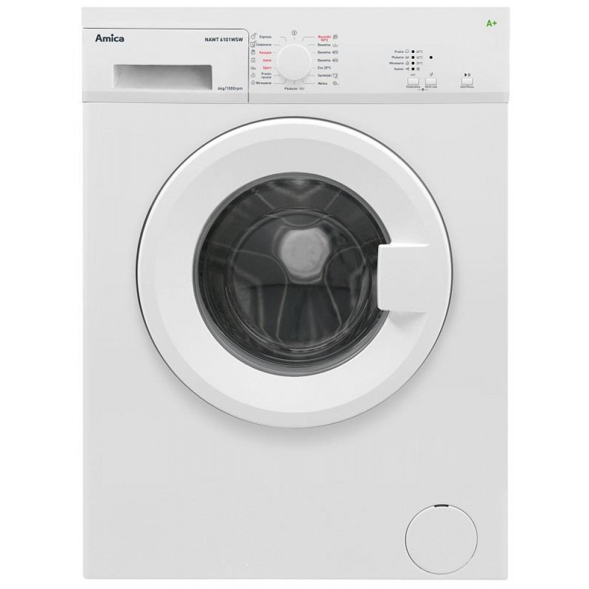
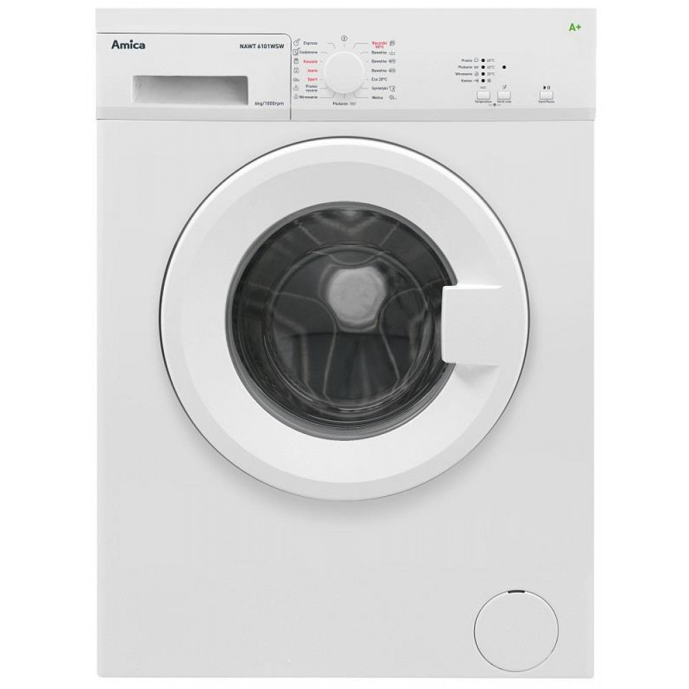

Kaitlentės gera kaina internetu | pigu.lt
2020.10.29 10:26

Mūsų interneto svetainėje yra naudojami slapukai. Slapukai padeda užtikrinti tinkamą tinklapio veikimą bei jo tobulinimą, todėl būtinieji slapukai (techniniai, funkciniai bei analitiniai) yra įdiegiami automatiškai. Siekiant individualizuoti jūsų naršymo patirtį bei pateikti pasiūlymus, kurie būtų aktualūs būtent Jums tinklapyje taip pat naudojami tiksliniai slapukai. Paspaudę „sutinku“ Jūs sutinkate su tikslinių slapukų įdiegimu ir naudojimu. Savo sutikimą galėsite atšaukti bet kuriuo metu, pakeisdami savo interneto naršyklės nustatymus ir ištrindami įrašytus slapukus. Daugiau informacijos - slapukų politikoje Sutinku Visos prekės
Konsultuojame visą parą: +370 661 05555 arba palikite pranešimą Informacija apie užsakymą
LT RU Atsisiųskite Pristatymas Informacija Pristatymas Atsisiųskite Informacija apie užsakymą Apmokėjimas Grąžinimas ir garantinis taisymas Apie Pigu.lt Prekiaukite per Pigu.lt Karjera Kontaktai Pirkimo-pardavimo taisyklės Privatumo politika Asmens duomenų apsauga Svarbiausią informaciją rasite čia Paspaudę “Mano Pigu.lt”prisijungsite prie savo
paskyros arba
susikursite naują Prisijungti Registruotis
Sveiki atvykę į Pigu.lt
Prisijungti Prisijungti su Facebook Neturite paskyros? RegistruotisRegistruotiems vartotojams grįžta 0,5% pirkinių vertės
Mano profilis Mano užsakymai Pristatymo adresai Nuolaidų kodai PiguEurai VIP klubas Patikusios prekės ( 0 ) Prekių 0 krepšelis Visos prekės Apsaugos, dezinfekcinės priemonės Top pasiūlymai Naujienos Išparduotuvė Prekės su pažeista pakuote Specialios apsaugos priemonės Kaukės, respiratoriai Dezinfekcinis skystis Vienkartinės pirštinės Apsauginiai skydeliai ir akiniai Apsauginės sienelės, dezinfekcinės stotelės Medicininės prekės Klausos aparatai Pirmoji pagalba Termometrai Inhaliatoriai Kraujospūdžio matuokliai Įtvarai Masažuokliai Optika Alkotesteriai Slaugos prekės Higienos prekės Veido priežiūrai Plaukų priežiūrai Dantų priežiūrai Intymiai higienai Skutimosi priemonės Muilai Vatos gaminiai, drėgnos servetėlės Kremai nuo saulės Natūrali ir ekologiška kosmetika Įranga žmonėms su specialiais poreikiais Vitaminai ir maisto papildai Arbatos ir vaistažolės Vitaminai ir maisto papildai imunitetui Vitaminai ir maisto papildai grožiui Vitaminai ir maisto papildai gerai savijautai Batonėliai Maisto papildai sportui Vaikui ir mamai Prekės mamoms Kūdikių maitinimo priemonės Kūdikių maistas Sauskelnės Kūdikių priežiūros priemonės Kosmetika vaikams ir mamomsSpecialios apsaugos priemonės
Kaukės, respiratoriai Dezinfekcinis skystis Vienkartinės pirštinės Apsauginiai skydeliai ir akiniai Apsauginės sienelės, dezinfekcinės stotelėsMedicininės prekės
Klausos aparatai Pirmoji pagalba Termometrai Inhaliatoriai Kraujospūdžio matuokliai Įtvarai Masažuokliai Optika Alkotesteriai Slaugos prekėsHigienos prekės
Veido priežiūrai Plaukų priežiūrai Dantų priežiūrai Intymiai higienai Skutimosi priemonės Muilai Vatos gaminiai, drėgnos servetėlės Kremai nuo saulės Natūrali ir ekologiška kosmetika Įranga žmonėms su specialiais poreikiaisVitaminai ir maisto papildai
Arbatos ir vaistažolės Vitaminai ir maisto papildai imunitetui Vitaminai ir maisto papildai grožiui Vitaminai ir maisto papildai gerai savijautai Batonėliai Maisto papildai sportuiVaikui ir mamai
Prekės mamoms Kūdikių maitinimo priemonės Kūdikių maistas Sauskelnės Kūdikių priežiūros priemonės Kosmetika vaikams ir mamoms Apranga, avalynė, aksesuarai Naujienos Išparduotuvė Prekės su pažeista pakuote Drabužiai moterims Suknelės Sportinė apranga moterims Megztiniai moterims Marškinėliai moterims Džemperiai moterims Tunikos Palaidinės, marškiniai moterims Sijonai Moteriški švarkeliai Kostiumėliai moterims Kelnės moterims Džinsai moterims Paltai moterims Striukės moterims Slidinėjimo apranga moterims Apatinis trikotažas moterims Maudymosi kostiumėliai Naktiniai, pižamos moterims Chalatai moterims Apatinių komplektai Liemenėlės Kelnaitės Apatiniai marškinėliai moterims Liekninantys apatiniai Pėdkelnės, kojinės moterims Termo apatiniai moterims Avalynė moterims Sportiniai bateliai, kedai moterims Basutės moterims Bateliai moterims Šlepetės moterims Guminiai batai moterims Aulinukai, ilgaauliai batai moterims Aksesuarai moterims Kuprinės Moteriškos rankinės Piniginės, kortelių dėklai moterims Moteriški laikrodžiai Akiniai nuo saulės Kepurės moterims Moteriškos pirštinės Skarelės, šalikai moterims Papuošalai Moteriški diržai Moteriški skėčiai Papuošalų dėžutės Vyriški drаbužiai Sportinė apranga vyrams Megztiniai vyrams Džemperiai vyrams Vyriški mаrškinėliai Vyriški marškiniai Vyriški kostiumai Vyriški švarkai Vyriškos liemenės Džinsai vyrams Vyriškos kelnės Vyriškos striukės Vyriški paltai Vyriškа slidinėjimo apranga Apatinis trikotažas vyrams Vyriški chalatai, pižamos Trumpikės Maudymosi šortai, glaudės Vyriški apatiniai marškinėliai Vyriškos kojinės Vyriški termo apatiniai Avalynė vyrams Kedai vyrams Vyriškos šlepetės, basutės Vyriški batai Aksesuarai vyrams Kuprinės Vyriškos rankinės Vyriškos piniginės, kortelių dėklai Vyriški laikrodžiai Akiniai nuo saulės vyrams Kaklaraiščiai, peteliškės Vyriški papuošalai Vyriški šalikai, kepurės, pirštinės Vyriški diržai Vyriški skėčiai Drabužiai ir avalynė vaikams Drabužiai mergaitėms Drabužiai berniukams Žiemos drabužiai vaikams Drabužiai kūdikiams Avalynė vaikams Aksesuarai vaikams Populiariausi drabužių prekiniai ženklai 4F apranga Adidas apranga ir avalynė Nike apranga ir avalynė Geox avalynė Lorenzo avalynė Tommy HIlfiger prekės Guess prekės Rieker avalynė Audimas apranga Puma apranga ir avalynė Crocs™ avalynė Drabužiai Avalynė AksesuaraiDrabužiai moterims
Suknelės Sportinė apranga moterims Megztiniai moterims Marškinėliai moterims Džemperiai moterims Tunikos Palaidinės, marškiniai moterims Sijonai Moteriški švarkeliai Kostiumėliai moterims Kelnės moterims Džinsai moterims Paltai moterims Striukės moterims Slidinėjimo apranga moterimsApatinis trikotažas moterims
Maudymosi kostiumėliai Naktiniai, pižamos moterims Chalatai moterims Apatinių komplektai Liemenėlės Kelnaitės Apatiniai marškinėliai moterims Liekninantys apatiniai Pėdkelnės, kojinės moterims Termo apatiniai moterimsAvalynė moterims
Sportiniai bateliai, kedai moterims Basutės moterims Bateliai moterims Šlepetės moterims Guminiai batai moterims Aulinukai, ilgaauliai batai moterimsAksesuarai moterims
Kuprinės Moteriškos rankinės Piniginės, kortelių dėklai moterims Moteriški laikrodžiai Akiniai nuo saulės Kepurės moterims Moteriškos pirštinės Skarelės, šalikai moterims Papuošalai Moteriški diržai Moteriški skėčiai Papuošalų dėžutėsVyriški drаbužiai
Sportinė apranga vyrams Megztiniai vyrams Džemperiai vyrams Vyriški mаrškinėliai Vyriški marškiniai Vyriški kostiumai Vyriški švarkai Vyriškos liemenės Džinsai vyrams Vyriškos kelnės Vyriškos striukės Vyriški paltai Vyriškа slidinėjimo aprangaApatinis trikotažas vyrams
Vyriški chalatai, pižamos Trumpikės Maudymosi šortai, glaudės Vyriški apatiniai marškinėliai Vyriškos kojinės Vyriški termo apatiniaiAvalynė vyrams
Kedai vyrams Vyriškos šlepetės, basutės Vyriški bataiAksesuarai vyrams
Kuprinės Vyriškos rankinės Vyriškos piniginės, kortelių dėklai Vyriški laikrodžiai Akiniai nuo saulės vyrams Kaklaraiščiai, peteliškės Vyriški papuošalai Vyriški šalikai, kepurės, pirštinės Vyriški diržai Vyriški skėčiaiDrabužiai ir avalynė vaikams
Drabužiai mergaitėms Drabužiai berniukams Žiemos drabužiai vaikams Drabužiai kūdikiams Avalynė vaikams Aksesuarai vaikamsPopuliariausi drabužių prekiniai ženklai
4F apranga Adidas apranga ir avalynė Nike apranga ir avalynė Geox avalynė Lorenzo avalynė Tommy HIlfiger prekės Guess prekės Rieker avalynė Audimas apranga Puma apranga ir avalynė Crocs™ avalynėDrabužiai
Avalynė
Aksesuarai
Baldai ir namų interjeras Top pasiūlymai Naujienos Išparduotuvė Prekės su pažeista pakuote Svetainės baldai Sofos Minkšti kampai Svetainės foteliai Minkštų baldų komplektai Sekcijos Komodos Svetainės spintelės Kavos staliukai Lentynos Sėdmaišiai ir pufai TV staliukai Vitrinos, indaujos Svetainės stalai Stalai-konsolės Baldų kolekcijos Minkštų baldų kolekcijos Spintos Black Red White baldai Miegamojo baldai Miegamojo komplektai Lovos Čiužiniai Antčiužiniai Lovų grotelės Spintelės prie lovos Kosmetiniai staliukai Sleepwell čiužiniai ir lovos Spintos Miegamojo baldų kolekcijos Premium baldai Virtuvės baldai Virtuvės baldų komplektai Virtuvinės spintelės Virtuvės ir valgomojo stalai, staliukai Virtuvės ir valgomojo kėdės Valgomojo komplektai Virtuvės stalviršiai Virtuvės baldų priedai Virtuvės baldų kolekcijos Vonios kambario baldai Vonios spintelės Vonios lentynos Vonios komplektai Vonios veidrodžiai Vonios aksesuarai Vonios kambario baldų kolekcijos Biuro baldai Kompiuteriniai, rašomieji stalai Biuro kėdės Biuro lentynos, spintelės Biuro baldų kolekcijos Prieškambario baldai Prieškambario komplektai Batų spintelės, lentynos ir suolai Drabužių kabyklos Prieškambario spintos Prieškambario veidrodžiai Prieškambario spintelės Prieškambario baldų kolekcijos Vaiko kambario baldai Vaikiškos lovos Kūdikių lovytės Vaikiškos spintelės Vaikiški rašomieji stalai Vaikiškos kėdutės ir staliukai Vaikiški sėdmaišiai, foteliai, pufai Vaikiškos komodos Vaikiškos lentynos Vaikiškos spintos Vaikiškos mokyklinės kėdės Žaislų dėžės Vaiko kambario baldų komplektai Vaikų kambario baldų kolekcijos Lauko baldai Lauko baldų komplektai Gultai Hamakai Lauko kėdės, foteliai, pufai Pagalvės, užvalkalai, apsaugos Pavėsinės Skėčiai, markizės, stovai Vaikiški lauko baldai Smėlio dėžės, smėlis Lauko stalai, staliukai Lauko suolai Lauko sūpynės Lauko baldų kolekcijos Priedai baldams Šviestuvai ir apšvietimo įranga Lubiniai šviestuvai Pakabinami šviestuvai Įmontuojami šviestuvai, LED panelės Sieniniai šviestuvai Staliniai šviestuvai Toršerai Vaikiški šviestuvai Šviestuvai - ventiliatoriai Kilimai, kilimėliai Kilimai Durų kilimėliai Patalynė Tapetai, fototapetai Dekoratyvinis akmuo Roletai, užuolaidos, karnizai Užuolаidos Roletai Romanetės Karnizai Žaliuzės Tinkleliai nuo vabzdžių Namų interjeras Interjero detalės Floristika Reprodukcijos, paveikslai Interjero lipdukai Rėmeliai, nuotraukų albumai Sieniniai laikrodžiai Vazos Žvakidės, žvakės Mobilios interjero sienelės VeidrodžiaiSvetainės baldai
Sofos Minkšti kampai Svetainės foteliai Minkštų baldų komplektai Sekcijos Komodos Svetainės spintelės Kavos staliukai Lentynos Sėdmaišiai ir pufai TV staliukai Vitrinos, indaujos Svetainės stalai Stalai-konsolės Baldų kolekcijos Minkštų baldų kolekcijos SpintosBlack Red White baldai
Miegamojo baldai
Miegamojo komplektai Lovos Čiužiniai Antčiužiniai Lovų grotelės Spintelės prie lovos Kosmetiniai staliukai Sleepwell čiužiniai ir lovos Spintos Miegamojo baldų kolekcijosPremium baldai
Virtuvės baldai
Virtuvės baldų komplektai Virtuvinės spintelės Virtuvės ir valgomojo stalai, staliukai Virtuvės ir valgomojo kėdės Valgomojo komplektai Virtuvės stalviršiai Virtuvės baldų priedai Virtuvės baldų kolekcijosVonios kambario baldai
Vonios spintelės Vonios lentynos Vonios komplektai Vonios veidrodžiai Vonios aksesuarai Vonios kambario baldų kolekcijosBiuro baldai
Kompiuteriniai, rašomieji stalai Biuro kėdės Biuro lentynos, spintelės Biuro baldų kolekcijosPrieškambario baldai
Prieškambario komplektai Batų spintelės, lentynos ir suolai Drabužių kabyklos Prieškambario spintos Prieškambario veidrodžiai Prieškambario spintelės Prieškambario baldų kolekcijosVaiko kambario baldai
Vaikiškos lovos Kūdikių lovytės Vaikiškos spintelės Vaikiški rašomieji stalai Vaikiškos kėdutės ir staliukai Vaikiški sėdmaišiai, foteliai, pufai Vaikiškos komodos Vaikiškos lentynos Vaikiškos spintos Vaikiškos mokyklinės kėdės Žaislų dėžės Vaiko kambario baldų komplektai Vaikų kambario baldų kolekcijosLauko baldai
Lauko baldų komplektai Gultai Hamakai Lauko kėdės, foteliai, pufai Pagalvės, užvalkalai, apsaugos Pavėsinės Skėčiai, markizės, stovai Vaikiški lauko baldai Smėlio dėžės, smėlis Lauko stalai, staliukai Lauko suolai Lauko sūpynės Lauko baldų kolekcijosPriedai baldams
Šviestuvai ir apšvietimo įranga
Lubiniai šviestuvai Pakabinami šviestuvai Įmontuojami šviestuvai, LED panelės Sieniniai šviestuvai Staliniai šviestuvai Toršerai Vaikiški šviestuvai Šviestuvai - ventiliatoriaiKilimai, kilimėliai
Kilimai Durų kilimėliaiPatalynė
Tapetai, fototapetai
Dekoratyvinis akmuo
Roletai, užuolaidos, karnizai
Užuolаidos Roletai Romanetės Karnizai Žaliuzės Tinkleliai nuo vabzdžiųNamų interjeras
Interjero detalės Floristika Reprodukcijos, paveikslai Interjero lipdukai Rėmeliai, nuotraukų albumai Sieniniai laikrodžiai Vazos Žvakidės, žvakės Mobilios interjero sienelėsVeidrodžiai
Kvepalai, kosmetika Top pasiūlymai Naujienos Išparduotuvė Prekės su pažeista pakuote Kvepalai Kvepalai moterims Kvepalai vyrams Kvepalų naujienos Kvepalų rinkiniai Kvepalai vaikams Parfumuota kosmetika moterims Parfumuota kosmetika vyrams Feromonai Namų kvapai Prabangūs kvepalai Kosmetika Kosmetikos rinkiniai Lietuviška kosmetika Latviška kosmetika Korėjietiška kosmetika Prancūziška kosmetika Kosmetika vaikams ir mamoms Natūrali ir ekologiška kosmetika Prabangi kosmetika Profesionali kosmetika Kosmetikos naujienos Kosmetika vyrams Dekoratyvinė kosmetika Akių šešėliai, pieštukai, blakstienų tušai, serumai Antakių dažai, pieštukai Priklijuojamos blakstienos, blakstienų rietikliai Lūpų dažai, blizgiai, balzamai, vazelinai Makiažo pagrindai, pudros Bronzantai, skaistalai Nagų lakai, stiprintojai Manikiūro, pedikiūro priemonės Makiažo šepetėliai, kempinėlės Kosmetinės, veidrodėliai Asmens higienai Dušo želė, aliejai Muilai Įklotai, tamponai, intymios higienos prausikliai Dezodorantai Dantų šepetėliai, pastos Depiliacijos priemonės Vatos gaminiai, drėgnos servetėlės Prezervatyvai Lubrikantai Skutimosi priemonės ir kosmetika Kosmetika veidui Veido kremai Veido aliejai, serumai Veido kaukės, paakių kaukės Paakių kremai, serumai Veido prausikliai, valikliai Plaukų priežiūrai Šampūnai Balzamai, kondicionieriai Priemonės plaukų stiprinimui Plaukų formavimo priemonės Plaukų dažai Šepečiai, šukos Plaukų aksesuarai Kosmetika kūnui Kūno kremai, losjonai Eteriniai, kosmetiniai aliejai, hidrolatai Anticeliulitinės, stangrinamosios priemonės Kremai nuo saulės Soliariumo kremai Masažo aliejai Priemonės nuo uodų, erkių Kūno šveitikliai Dušo želė, aliejai Muilai Populiariausi kvepalai Calvin Klein kvepalai Versace kvepalai Hugo Boss kvepalai Giorgio Armani kvepalai Victoria's Secret kvepalai ir kosmetika Elizabeth Arden kvepalai Dolce & Gabbana kvepalai Lanvin kvepalai Paco Rabanne kvepalai Carolina Herrera kvepalai Lacoste kvepalai Trussardi kvepalai Antonio Banderas kvepalai Populiariausia kosmetika L'Oréal Paris kosmetika Filorga kosmetika TIGI kosmetika Australian Gold kosmetika L'Oreal Professionnel kosmetika Chi kosmetika Kallos kosmetika Schwarzkopf kosmetika Olaplex kosmetika Max Factor kosmetika Collistar kosmetika Gillette kosmetika Bourjois kosmetika Clinique kosmetikaKvepalai
Kvepalai moterims Kvepalai vyrams Kvepalų naujienos Kvepalų rinkiniai Kvepalai vaikams Parfumuota kosmetika moterims Parfumuota kosmetika vyrams Feromonai Namų kvapai Prabangūs kvepalaiKosmetika
Kosmetikos rinkiniai Lietuviška kosmetika Latviška kosmetika Korėjietiška kosmetika Prancūziška kosmetika Kosmetika vaikams ir mamoms Natūrali ir ekologiška kosmetika Prabangi kosmetika Profesionali kosmetika Kosmetikos naujienos Kosmetika vyramsDekoratyvinė kosmetika
Akių šešėliai, pieštukai, blakstienų tušai, serumai Antakių dažai, pieštukai Priklijuojamos blakstienos, blakstienų rietikliai Lūpų dažai, blizgiai, balzamai, vazelinai Makiažo pagrindai, pudros Bronzantai, skaistalai Nagų lakai, stiprintojai Manikiūro, pedikiūro priemonės Makiažo šepetėliai, kempinėlės Kosmetinės, veidrodėliaiAsmens higienai
Dušo želė, aliejai Muilai Įklotai, tamponai, intymios higienos prausikliai Dezodorantai Dantų šepetėliai, pastos Depiliacijos priemonės Vatos gaminiai, drėgnos servetėlės Prezervatyvai Lubrikantai Skutimosi priemonės ir kosmetikaKosmetika veidui
Veido kremai Veido aliejai, serumai Veido kaukės, paakių kaukės Paakių kremai, serumai Veido prausikliai, valikliaiPlaukų priežiūrai
Šampūnai Balzamai, kondicionieriai Priemonės plaukų stiprinimui Plaukų formavimo priemonės Plaukų dažai Šepečiai, šukos Plaukų aksesuaraiKosmetika kūnui
Kūno kremai, losjonai Eteriniai, kosmetiniai aliejai, hidrolatai Anticeliulitinės, stangrinamosios priemonės Kremai nuo saulės Soliariumo kremai Masažo aliejai Priemonės nuo uodų, erkių Kūno šveitikliai Dušo želė, aliejai MuilaiPopuliariausi kvepalai
Calvin Klein kvepalai Versace kvepalai Hugo Boss kvepalai Giorgio Armani kvepalai Victoria's Secret kvepalai ir kosmetika Elizabeth Arden kvepalai Dolce & Gabbana kvepalai Lanvin kvepalai Paco Rabanne kvepalai Carolina Herrera kvepalai Lacoste kvepalai Trussardi kvepalai Antonio Banderas kvepalaiPopuliariausia kosmetika
L'Oréal Paris kosmetika Filorga kosmetika TIGI kosmetika Australian Gold kosmetika L'Oreal Professionnel kosmetika Chi kosmetika Kallos kosmetika Schwarzkopf kosmetika Olaplex kosmetika Max Factor kosmetika Collistar kosmetika Gillette kosmetika Bourjois kosmetika Clinique kosmetika Vaikams ir kūdikiams Top pasiūlymai Naujienos Išparduotuvė Prekės su pažeista pakuote Žaislai vaikams Žaislai berniukams Žaislai mergaitėms Žaislai kūdikiams Prekės mokyklai Kuprinės mokyklai, sportiniai maišeliai Penalai Rankdarbiams Piešimo, tapybos, lipdymo reikmenys Kanceliarinės prekės Vadovėliai Pratybų sąsiuviniai Sąsiuviniai ir popieriaus prekės Rašymo priemonės Žaidimai vаikams Stalo žaidimai Kompiuteriniai žaidimai Žaidimų konsolės Žiemos sportas Vaikiški planšetiniai kompiuteriai Kūdikių prekės Autokėdutės ir jų priedai Vaikiški vežimėliai ir jų priedai Sauskelnės Maitinimo priemonės Kūdikio priežiūrai Prekės mamoms Kūdikių ir vaikų maistas Vaikštynės Nešioklės Kūdikių lovytės Maniežai vaikams Čiužiniai kūdikiams Patalynė kūdikiams Gultukai ir sūpynės Kūdikio kraitelis Saugos varteliai, apsaugos Antspaudai kūdikiams Drabužiai ir avalynė vaikams Avalynė vaikams Drabužiai kūdikiams Drabužiai mergaitėms Drabužiai berniukams Šventinė apranga vaikams Aksesuarai vaikams Žiemos drabužiai vaikams Žieminiai batai vaikams Žaislai vaikams iki 3 metų LEGO® žaislai Minkšti (pliušiniai) žaislai Edukaciniai žaislai Muzikiniai žaislai Barškučiai, kramtukai Stumdukai, paspiriamos mašinėlės Supamieji žaislai Vonios žaislai Mediniai žaislai Baseinai su kamuoliukais Žаislai vаikams nuo 3 metų LEGO® žaidimai Konstruktoriai ir kaladėlės Stalo žaidimai, galvosūkiai Profesiniai žaislai Lavinamieji žaislai Dėlionės (puzzle) Deimantinės mozaikos Tapyba pagal skaičius Interaktyvūs žaislai Lėlės, lėlių namai Žaisliniai ginklai Žaislinės mašinos, traukinukai, lėktuvai, laivai Filmukų herojai, figūrėlės Dinozaurai, gyvūnai Minkšti (pliušiniai) žaislai Vaiko kambarys, šventinė atributika, knygos Vaiko kambario baldai Patalynė vaikams Vaikiški fototapetai Vaikiški šviestuvai Knygos vaikams Dekoracijos, indai vaikų šventėms Karnavaliniai kostiumai vaikams Kvepalai vaikams Lauko žaislai Dviratukai vaikams Paspirtukai vaikams Balansiniai dviratukai Elektromobiliai vaikams Čiuožyklos Sūpynės Triratukai Smėlio dėžės, smėlis Vaikų žaidimų nameliai Vandens, smėlio ir paplūdimio žaislai Batutai vaikams Riedučiai Riedlentės Rogutės Populiariausi prekiniai ženklai LEGO® Cool Club Maxi Cosi Lionelo Kinderkraft Smiki Philips Avent PLAYMOBIL® Joie PAMPERS Fisher Price Moony L.O.L. DINO BIKES BabybjörnŽaislai vaikams
Žaislai berniukams Žaislai mergaitėms Žaislai kūdikiamsPrekės mokyklai
Kuprinės mokyklai, sportiniai maišeliai Penalai Rankdarbiams Piešimo, tapybos, lipdymo reikmenys Kanceliarinės prekės Vadovėliai Pratybų sąsiuviniai Sąsiuviniai ir popieriaus prekės Rašymo priemonėsŽaidimai vаikams
Stalo žaidimai Kompiuteriniai žaidimai Žaidimų konsolės Žiemos sportas Vaikiški planšetiniai kompiuteriaiKūdikių prekės
Autokėdutės ir jų priedai Vaikiški vežimėliai ir jų priedai Sauskelnės Maitinimo priemonės Kūdikio priežiūrai Prekės mamoms Kūdikių ir vaikų maistas Vaikštynės Nešioklės Kūdikių lovytės Maniežai vaikams Čiužiniai kūdikiams Patalynė kūdikiams Gultukai ir sūpynės Kūdikio kraitelis Saugos varteliai, apsaugos Antspaudai kūdikiamsDrabužiai ir avalynė vaikams
Avalynė vaikams Drabužiai kūdikiams Drabužiai mergaitėms Drabužiai berniukams Šventinė apranga vaikams Aksesuarai vaikams Žiemos drabužiai vaikams Žieminiai batai vaikamsŽaislai vaikams iki 3 metų
LEGO® žaislai Minkšti (pliušiniai) žaislai Edukaciniai žaislai Muzikiniai žaislai Barškučiai, kramtukai Stumdukai, paspiriamos mašinėlės Supamieji žaislai Vonios žaislai Mediniai žaislai Baseinai su kamuoliukaisŽаislai vаikams nuo 3 metų
LEGO® žaidimai Konstruktoriai ir kaladėlės Stalo žaidimai, galvosūkiai Profesiniai žaislai Lavinamieji žaislai Dėlionės (puzzle) Deimantinės mozaikos Tapyba pagal skaičius Interaktyvūs žaislai Lėlės, lėlių namai Žaisliniai ginklai Žaislinės mašinos, traukinukai, lėktuvai, laivai Filmukų herojai, figūrėlės Dinozaurai, gyvūnai Minkšti (pliušiniai) žaislaiVaiko kambarys, šventinė atributika, knygos
Vaiko kambario baldai Patalynė vaikams Vaikiški fototapetai Vaikiški šviestuvai Knygos vaikams Dekoracijos, indai vaikų šventėms Karnavaliniai kostiumai vaikams Kvepalai vaikamsLauko žaislai
Dviratukai vaikams Paspirtukai vaikams Balansiniai dviratukai Elektromobiliai vaikams Čiuožyklos Sūpynės Triratukai Smėlio dėžės, smėlis Vaikų žaidimų nameliai Vandens, smėlio ir paplūdimio žaislai Batutai vaikams Riedučiai Riedlentės RogutėsPopuliariausi prekiniai ženklai
LEGO® Cool Club Maxi Cosi Lionelo Kinderkraft Smiki Philips Avent PLAYMOBIL® Joie PAMPERS Fisher Price Moony L.O.L. DINO BIKES Babybjörn Autoprekės Top pasiūlymai Naujienos Išparduotuvė Prekės su pažeista pakuote Padangos Vasarinės padangos Žieminės padangos Universalios padangos Akumuliatoriai ir jų krovikliai Akumuliatoriai Akumuliatorių krovikliai Automobiliniai tepalai Variklinės alyvos Kitos alyvos Alyvos priedai Auto aksesuarai ir priedai Langų tamsinimo plėvelės Duslintuvų antgaliai ir bakeliai Lemputės Pavarų svirties antgaliai Porankiai Ratų gaubtai Valytuvai Vairų užvalkalai ir vairai Automobiliniai kilimėliai Modeliniai tekstiliniai kilimėliai Modeliniai guminiai kilimėliai Universalūs kilimėliai Modeliniai bagažinių kilimėliai Autoturizmo reikmenys Stogo bagažinės Dviračių laikikliai Stogo skersiniai ir bagažinių atitvarai Autokėdutės Automobilinė chemija ir oro gaivikliai Langų ir aušinimo skysčiai Automobilinė chemija Automobiliniai dažai Valymo šluostės, servetėlės Salono oro gaivikliai Aukšto slėgio plovimo įranga ir priedai Plovimo įranga Plovimo įrangos priedai Kitos auto prekės Auto reikmenys Automobilio priežiūros priemonės žiemai Alkotesteriai Sėdynių užtiesalai, priedai Nano technologijos automobiliams Saugos reikmenys Moto prekės Moto reikmenys Moto alyvos Moto akumuliatoriai Moto apranga GPS navigacija GPS imtuvai Vaizdo registratoriai Elektros įranga FM moduliatoriai Įtampos keitikliai Parkavimo sistemos Аutomobilinė laisvų rankų įranga Auto lemрutės Automobilių 12V el. priedai Auto aparatūra Automagnetolos USB adapteriai gamyklinei garso sistemai Automobiliniai garsiakalbiai Automobiliniai stiprintuvai Radijo ryšys Radijo stotelės, racijos Radijo ryšio antenos Kuro talpos Automobilių dalys StarteriaiPadangos
Vasarinės padangos Žieminės padangos Universalios padangosAkumuliatoriai ir jų krovikliai
Akumuliatoriai Akumuliatorių krovikliaiAutomobiliniai tepalai
Variklinės alyvos Kitos alyvos Alyvos priedaiAuto aksesuarai ir priedai
Langų tamsinimo plėvelės Duslintuvų antgaliai ir bakeliai Lemputės Pavarų svirties antgaliai Porankiai Ratų gaubtai Valytuvai Vairų užvalkalai ir vairaiAutomobiliniai kilimėliai
Modeliniai tekstiliniai kilimėliai Modeliniai guminiai kilimėliai Universalūs kilimėliai Modeliniai bagažinių kilimėliaiAutoturizmo reikmenys
Stogo bagažinės Dviračių laikikliai Stogo skersiniai ir bagažinių atitvarai AutokėdutėsAutomobilinė chemija ir oro gaivikliai
Langų ir aušinimo skysčiai Automobilinė chemija Automobiliniai dažai Valymo šluostės, servetėlės Salono oro gaivikliaiAukšto slėgio plovimo įranga ir priedai
Plovimo įranga Plovimo įrangos priedaiKitos auto prekės
Auto reikmenys Automobilio priežiūros priemonės žiemai Alkotesteriai Sėdynių užtiesalai, priedai Nano technologijos automobiliams Saugos reikmenysMoto prekės
Moto reikmenys Moto alyvos Moto akumuliatoriai Moto aprangaGPS navigacija
GPS imtuvaiVaizdo registratoriai
Elektros įranga
FM moduliatoriai Įtampos keitikliai Parkavimo sistemos Аutomobilinė laisvų rankų įranga Auto lemрutės Automobilių 12V el. priedaiAuto aparatūra
Automagnetolos USB adapteriai gamyklinei garso sistemai Automobiliniai garsiakalbiai Automobiliniai stiprintuvaiRadijo ryšys
Radijo stotelės, racijos Radijo ryšio antenosKuro talpos
Automobilių dalys
Starteriai Sportas, laisvalaikis, turizmas Top pasiūlymai Naujienos Išparduotuvė Prekės su pažeista pakuote Dviračiai, paspirtukai, riedučiai, riedlentės Dviračiai Dviratukai ir triratukai Dviračių priedai ir aksesuarai Riedučiai Riedlentės Paspirtukai Elektriniai paspirtukai Riedžiai Dviračių laikikliai Šalmai Apsaugos Sportiniai akiniai Treniruokliai, treniruočių įranga Bėgimo takeliai Elipsiniai treniruokliai Dviračiai treniruokliai Svoriai, svarmenys, grifai Daugiafunkciniai treniruokliai Treniruočių suoliukai ir stovai Steperiai treniruokliai Irklavimo treniruokliai Sporto apranga ir avalynė Sportiniai bateliai moterims Sportinė apranga moterims Sportinė apranga vyrams Sportbačiai vyrams Laisvalaikis Kepsninės, šašlykinės, rūkyklos Lauko baseinai Batutai Žaidimų stalai Pripučiamos ir paplūdimio prekės Valtys, baidarės ir jų priedai Medžioklės reikmenys Žvejybos reikmenys Azartiniai žaidimai, pokeris Hamakai, gultai, pavėsinės,sūpynės Lauko žaislai vaikams Lauko žaidimai Lagaminai, kelioniniai krepšiai Kuprinės ir krepšiai Kūrybingas laisvalaikis Stalo žaidimai Dėlionės (puzzle) Deimantinės mozaikos Tapyba pagal skaičius Rankdarbiams Turizmas Turistiniai baldai Turistiniai čiužiniai ir kilimėliai Pripučiami čiužiniai ir baldai Palapinės Miegmaišiai Turistinis inventorius Alpinizmo įranga Turistinės ir kelioninės kuprinės Gertuvės ir termo puodeliai Biotualetai Autoturizmo reikmenys Turistinio inventoriaus, drabužių ir avalynės priežiūros priemonės Priemonės nuo uodų Kepsninės, šašlykinės, rūkyklos Žiemos sportas Rogutės Pačiūžos Kalnų slidinėjimas Lygumų slidinėjimas Ledo ritulys Spоrto prekės Krepšinis Futbolas Gimnastikos ir fitneso prekės Vandens sportas Tinklinis Rankinis Plaukimas Nardymas Kovos menai Lauko tenisas Stalo tenisas Biliardas Smiginis Badmintonas Skvošas Beisbolas Grindų ir žolės riedulys Ėjimo lazdos Žiemos sportas Kuprinės ir krepšiai Žingsniamačiai, chronometrai, širdies ritmo monitoriai Įtvarai Kamuolių pompos ir adatos Žaidimų stalai Treniruokliai, treniruočių įranga Kamuoliai Maisto papildai Aminorūgštys Angliavandeniai Azoto oksido skatintojai Baltymai Batonėliai Kiti papildai Energetikai Funkcinis maistas Glutaminas Kreatinas L-karnitinas Papildai masei auginti Papildai sąnariams Produktai atsistatymui Riebalų degintojai Papildai lieknėjimui Testosterono skatintojai Vitaminai Žuvų taukaiDviračiai, paspirtukai, riedučiai, riedlentės
Dviračiai Dviratukai ir triratukai Dviračių priedai ir aksesuarai Riedučiai Riedlentės Paspirtukai Elektriniai paspirtukai Riedžiai Dviračių laikikliai Šalmai Apsaugos Sportiniai akiniaiTreniruokliai, treniruočių įranga
Bėgimo takeliai Elipsiniai treniruokliai Dviračiai treniruokliai Svoriai, svarmenys, grifai Daugiafunkciniai treniruokliai Treniruočių suoliukai ir stovai Steperiai treniruokliai Irklavimo treniruokliaiSporto apranga ir avalynė
Sportiniai bateliai moterims Sportinė apranga moterims Sportinė apranga vyrams Sportbačiai vyramsLaisvalaikis
Kepsninės, šašlykinės, rūkyklos Lauko baseinai Batutai Žaidimų stalai Pripučiamos ir paplūdimio prekės Valtys, baidarės ir jų priedai Medžioklės reikmenys Žvejybos reikmenys Azartiniai žaidimai, pokeris Hamakai, gultai, pavėsinės,sūpynės Lauko žaislai vaikams Lauko žaidimai Lagaminai, kelioniniai krepšiai Kuprinės ir krepšiaiKūrybingas laisvalaikis
Stalo žaidimai Dėlionės (puzzle) Deimantinės mozaikos Tapyba pagal skaičius RankdarbiamsTurizmas
Turistiniai baldai Turistiniai čiužiniai ir kilimėliai Pripučiami čiužiniai ir baldai Palapinės Miegmaišiai Turistinis inventorius Alpinizmo įranga Turistinės ir kelioninės kuprinės Gertuvės ir termo puodeliai Biotualetai Autoturizmo reikmenys Turistinio inventoriaus, drabužių ir avalynės priežiūros priemonės Priemonės nuo uodų Kepsninės, šašlykinės, rūkyklosŽiemos sportas
Rogutės Pačiūžos Kalnų slidinėjimas Lygumų slidinėjimas Ledo ritulysSpоrto prekės
Krepšinis Futbolas Gimnastikos ir fitneso prekės Vandens sportas Tinklinis Rankinis Plaukimas Nardymas Kovos menai Lauko tenisas Stalo tenisas Biliardas Smiginis Badmintonas Skvošas Beisbolas Grindų ir žolės riedulys Ėjimo lazdos Žiemos sportas Kuprinės ir krepšiai Žingsniamačiai, chronometrai, širdies ritmo monitoriai Įtvarai Kamuolių pompos ir adatos Žaidimų stalai Treniruokliai, treniruočių įranga KamuoliaiMaisto papildai
Aminorūgštys Angliavandeniai Azoto oksido skatintojai Baltymai Batonėliai Kiti papildai Energetikai Funkcinis maistas Glutaminas Kreatinas L-karnitinas Papildai masei auginti Papildai sąnariams Produktai atsistatymui Riebalų degintojai Papildai lieknėjimui Testosterono skatintojai Vitaminai Žuvų taukai Dovanos, šventinė atributika Top pasiūlymai Naujienos Išparduotuvė Prekės su pažeista pakuote Šventinė atributika Kapų žvakės Karnavaliniai kostiumai Dekoracijos šventėms Dovanų pakavimo priemonės Balionai Vienkartiniai indai šventėms Lietuviška sirgalių atributika Vėliavos ir jų priedai Kalėdinės prekės Eglutės, vainikai, stovai Eglutės žaisliukai, viršūnės Girliandos Dovanų pakavimo priemonės Kalėdinės dekoracijos Advento kalendoriai Religinės prekės Bažnytinės žvakės, žvakidės Bažnytiniai reikmenys Dovanos moterims Kvepalai Jai Kosmetika Jai Aksesuarai moterims Originalios dovanos Jai Dovanos vyrams Kvepalai Jam Kosmetika Jam Aksesuarai vyrams Originalios dovanos Jam Dovanos vaikams Dovanos Senjorams Gerai sveikatai Kraujospūdžio matuokliai Mobilieji telefonai Senjorams Patogiai buičiai Verslo dovanos Dovanų kuponai Pigu.lt dovanų kuponai Laisvalaikio kuponai Originalios dovanos Originalios dovanos vyrams Originalios dovanos moterims Marškinėliai Originalios taupyklės Vakarėliams ir šventėms Linksmosios prijuostės Originalūs puodeliai Laikrodžiai žadintuvai Raktų pakabukai Kitos originalios dovanos Floristika Dirbtinės gėlės Floristikos reikmenys Miegančios rožės, stabilizuoti augalai Zippo žiebtuvėliai ir priedai Šv. Valentino dienaiŠventinė atributika
Kapų žvakės Karnavaliniai kostiumai Dekoracijos šventėms Dovanų pakavimo priemonės Balionai Vienkartiniai indai šventėms Lietuviška sirgalių atributika Vėliavos ir jų priedaiKalėdinės prekės
Eglutės, vainikai, stovai Eglutės žaisliukai, viršūnės Girliandos Dovanų pakavimo priemonės Kalėdinės dekoracijos Advento kalendoriaiReliginės prekės
Bažnytinės žvakės, žvakidės Bažnytiniai reikmenysDovanos moterims
Kvepalai Jai Kosmetika Jai Aksesuarai moterims Originalios dovanos JaiDovanos vyrams
Kvepalai Jam Kosmetika Jam Aksesuarai vyrams Originalios dovanos JamDovanos vaikams
Dovanos Senjorams
Gerai sveikatai Kraujospūdžio matuokliai Mobilieji telefonai Senjorams Patogiai buičiaiVerslo dovanos
Dovanų kuponai
Pigu.lt dovanų kuponai Laisvalaikio kuponaiOriginalios dovanos
Originalios dovanos vyrams Originalios dovanos moterims Marškinėliai Originalios taupyklės Vakarėliams ir šventėms Linksmosios prijuostės Originalūs puodeliai Laikrodžiai žadintuvai Raktų pakabukai Kitos originalios dovanosFloristika
Dirbtinės gėlės Floristikos reikmenys Miegančios rožės, stabilizuoti augalaiZippo žiebtuvėliai ir priedai
Šv. Valentino dienai
Buitinė technika ir elektronika Top pasiūlymai Naujienos Išparduotuvė Prekės su pažeista pakuote Televizoriai ir jų priedai Televizoriai Išmaniųjų (Smart TV) ir televizorių priedai Televizorių laikikliai, tvirtinimai Kabeliai ir adapteriai TV antenos ir jų priedai TV imtuvai (priedėliai) Multimedijos grotuvai Video ir Audio aparatūra Namų kino sistemos Vaizdo grotuvai Muzikiniai centrai Namų garso kolonėlės ir Soundbar sistemos Magnetolos Plokštelių grotuvai ir patefonai Radijo imtuvai ir žadintuvai Muzikos instrumentai ir priedai Žaidimų įranga, žaidimai Šaldytuvai, šaldikliai Šaldytuvai Šaldikliai, šaldymo dėžės Vyno šaldytuvai Automobiliniai šaldytuvai Skalbimo mašinos Džiovyklės Virtuvės technika Orkaitės Kaitlentės Indaplovės Orkaitės ir kaitlentės komplektai Dujinės viryklės Gartraukiai Mikrobangų krosnelės Elektrinės viryklės Mini krosnelės, orkaitės Maisto atliekų smulkintuvai Smulki virtuvės įranga Kavos aparatai Virtuviniai kombainai Kokteilinės Trintuvai Garų puodai, daugiafunkciai puodai Plakikliai Sulčiaspaudės Virduliai Kavamalės Išskirtiniai maisto gaminimo prietaisai Žaliavalgystė Kava, kakava, arbata Mėsmalės Vaisių džiovintuvai, daigyklės Vakuumatoriai Gruzdintuvės Duonkepės Vaflinės, el. blynų keptuvės Sumuštinių keptuvės Skrudintuvai Griliai, marinatoriai Svarstyklės (virtuvinės) Vandens filtrai Pjaustyklės, peilių galąstuvai Namų technika Dulkių siurbliai Akumuliatoriai dulkių siurbliams Lygintuvai Garais valantys prietaisai, langų valytuvai Siuvimo mašinos Svarstyklės (buitinės) Dulkių siurblių priedai Pūkų rinkikliai Meteorologinės stotelės, termometrai KÄRCHER Grožis, sveikata Epiliatoriai Barzdaskutės Plaukų džiovintuvai Plaukų formavimo ir tiesinimo prietaisai Plaukų kirpimo mašinėlės Masažinės vonelės Masažuokliai Kraujospūdžio matuokliai Skaitmeniniai termometrai Elektriniai dantų šepetėliai Manikiūro, pedikiūro priemonės Veido priežiūros prietaisai Inhaliatoriai Oro reguliavimo įranga Ventiliatoriai Kondicionieriai, šilumos siurbliai, rekuperatoriai Šildytuvai Oro drėkintuvai, valytuvai Vandens šildytuvai Grindų ir veidrodžių šildymo kilimėliai Vonios ventiliatoriai Dūmų detektoriai Oro reguliavimo įrangos priedai Buitinės technikos priedai Buitinės technikos priedai Dulkių siurblių priedai Priedai kavos aparatams Grožio prekių priedai Gartraukių filtraiTelevizoriai ir jų priedai
Televizoriai Išmaniųjų (Smart TV) ir televizorių priedai Televizorių laikikliai, tvirtinimai Kabeliai ir adapteriai TV antenos ir jų priedai TV imtuvai (priedėliai) Multimedijos grotuvaiVideo ir Audio aparatūra
Namų kino sistemos Vaizdo grotuvai Muzikiniai centrai Namų garso kolonėlės ir Soundbar sistemos Magnetolos Plokštelių grotuvai ir patefonai Radijo imtuvai ir žadintuvai Muzikos instrumentai ir priedaiŽaidimų įranga, žaidimai
Šaldytuvai, šaldikliai
Šaldytuvai Šaldikliai, šaldymo dėžės Vyno šaldytuvai Automobiliniai šaldytuvaiSkalbimo mašinos
Džiovyklės
Virtuvės technika
Orkaitės Kaitlentės Indaplovės Orkaitės ir kaitlentės komplektai Dujinės viryklės Gartraukiai Mikrobangų krosnelės Elektrinės viryklės Mini krosnelės, orkaitės Maisto atliekų smulkintuvaiSmulki virtuvės įranga
Kavos aparatai Virtuviniai kombainai Kokteilinės Trintuvai Garų puodai, daugiafunkciai puodai Plakikliai Sulčiaspaudės Virduliai Kavamalės Išskirtiniai maisto gaminimo prietaisai Žaliavalgystė Kava, kakava, arbata Mėsmalės Vaisių džiovintuvai, daigyklės Vakuumatoriai Gruzdintuvės Duonkepės Vaflinės, el. blynų keptuvės Sumuštinių keptuvės Skrudintuvai Griliai, marinatoriai Svarstyklės (virtuvinės) Vandens filtrai Pjaustyklės, peilių galąstuvaiNamų technika
Dulkių siurbliai Akumuliatoriai dulkių siurbliams Lygintuvai Garais valantys prietaisai, langų valytuvai Siuvimo mašinos Svarstyklės (buitinės) Dulkių siurblių priedai Pūkų rinkikliai Meteorologinės stotelės, termometraiKÄRCHER
Grožis, sveikata
Epiliatoriai Barzdaskutės Plaukų džiovintuvai Plaukų formavimo ir tiesinimo prietaisai Plaukų kirpimo mašinėlės Masažinės vonelės Masažuokliai Kraujospūdžio matuokliai Skaitmeniniai termometrai Elektriniai dantų šepetėliai Manikiūro, pedikiūro priemonės Veido priežiūros prietaisai InhaliatoriaiOro reguliavimo įranga
Ventiliatoriai Kondicionieriai, šilumos siurbliai, rekuperatoriai Šildytuvai Oro drėkintuvai, valytuvai Vandens šildytuvai Grindų ir veidrodžių šildymo kilimėliai Vonios ventiliatoriai Dūmų detektoriai Oro reguliavimo įrangos priedaiBuitinės technikos priedai
Buitinės technikos priedai Dulkių siurblių priedai Priedai kavos aparatams Grožio prekių priedai Gartraukių filtrai Mobilieji telefonai, Foto ir Video Top pasiūlymai Naujienos Išparduotuvė Prekės su pažeista pakuote Mobilieji telefonai ir jų priedai Mobilieji telefonai Atminties kortelės telefonams Laisvų rankų įranga Telefono dėklai Apsauginės plėvelės telefonams Telefono laikikliai Asmenukių lazdos (selfie sticks) Atsarginiai maitinimo šaltiniai (power bank) Akumuliatoriai telefonams Laidai telefonams Priedai telefonams Krovikliai telefonams Išmanieji laikrodžiai, apyrankės Išmanieji laikrodžiai (smartwatch) Išmaniosios apyrankės (fitness tracker) Išmaniųjų laikrodžių ir apyrankių priedai Išmanioji technika ir priedai Foto įranga Skaitmeniniai fotoaparatai Momentiniai fotoaparatai Atminties kortelės fotoaparatams, kameroms Objektyvai Dėklai, krepšiai fotoaparatams ir objektyvams Fotografijos apšvietimo įranga Fotoaparato stovas Fotoaparatų krovikliai Akumuliatoriai fotoaparatams Filtrai objektyvams Priedai fotoaparatams Skaitmeniniai nuotraukų rėmeliai Žiūronai Video kameros ir jų priedai Vaizdo kameros Automobilinės vaizdo kameros (vaizdo registratoriai) Veiksmo ir laisvalaikio kameros Dėklai vaizdo kameroms Krovikliai vaizdo kameroms Akumuliatoriai vaizdo kameroms Priedai vaizdo kameroms Teleskopai ir mikroskopai GPS navigacinė įranga Auto aparatūra Planšetės, el. skaitytuvai MP3 grotuvai ir diktofonai MP3 grotuvai Diktofonai Išmanieji telefonai Stacionarūs telefonai Termovizoriai Mobiliųjų telefonų gamintojai Honor telefonai Realme telefonai Xiaomi telefonai Apple telefonai Samsung telefonai Huawei telefonai Nokia telefonai CAT telefonai LG telefonai Sony telefonai Prestigio telefonai Populiariausi telefonų modeliai Apple iPhone 11 Huawei P30 | P30 pro Samsung Galaxy A51 Huawei P40 | P40 Pro | P40 lite Xiaomi Redmi Note 9 | 9 Pro Apple iPhone SE Samsung Galaxy A20e Apple iPhone 7Mobilieji telefonai ir jų priedai
Mobilieji telefonai Atminties kortelės telefonams Laisvų rankų įranga Telefono dėklai Apsauginės plėvelės telefonams Telefono laikikliai Asmenukių lazdos (selfie sticks) Atsarginiai maitinimo šaltiniai (power bank) Akumuliatoriai telefonams Laidai telefonams Priedai telefonams Krovikliai telefonamsIšmanieji laikrodžiai, apyrankės
Išmanieji laikrodžiai (smartwatch) Išmaniosios apyrankės (fitness tracker) Išmaniųjų laikrodžių ir apyrankių priedaiIšmanioji technika ir priedai
Foto įranga
Skaitmeniniai fotoaparatai Momentiniai fotoaparatai Atminties kortelės fotoaparatams, kameroms Objektyvai Dėklai, krepšiai fotoaparatams ir objektyvams Fotografijos apšvietimo įranga Fotoaparato stovas Fotoaparatų krovikliai Akumuliatoriai fotoaparatams Filtrai objektyvams Priedai fotoaparatamsSkaitmeniniai nuotraukų rėmeliai
Žiūronai
Video kameros ir jų priedai
Vaizdo kameros Automobilinės vaizdo kameros (vaizdo registratoriai) Veiksmo ir laisvalaikio kameros Dėklai vaizdo kameroms Krovikliai vaizdo kameroms Akumuliatoriai vaizdo kameroms Priedai vaizdo kameromsTeleskopai ir mikroskopai
GPS navigacinė įranga
Auto aparatūra
Planšetės, el. skaitytuvai
MP3 grotuvai ir diktofonai
MP3 grotuvai DiktofonaiIšmanieji telefonai
Stacionarūs telefonai
Termovizoriai
Mobiliųjų telefonų gamintojai
Honor telefonai Realme telefonai Xiaomi telefonai Apple telefonai Samsung telefonai Huawei telefonai Nokia telefonai CAT telefonai LG telefonai Sony telefonai Prestigio telefonaiPopuliariausi telefonų modeliai
Apple iPhone 11 Huawei P30 | P30 pro Samsung Galaxy A51 Huawei P40 | P40 Pro | P40 lite Xiaomi Redmi Note 9 | 9 Pro Apple iPhone SE Samsung Galaxy A20e Apple iPhone 7 Kompiuterinė technika Top pasiūlymai Naujienos Išparduotuvė Prekės su pažeista pakuote Nešiojami kompiuteriai, priedai Nešiojami kompiuteriai Krepšiai, kuprinės, dėklai kompiuteriams Įkrovikliai nešiojamiems kompiuteriams Akumuliatoriai nešiojamiems kompiuteriams Kompiuterių aušinimo ir kiti priedai Komplektuojami nešiojami kompiuteriai Asus komplektuojami nešiojami kompiuteriai HP komplektuojami nešiojami kompiuteriai Lenovo komplektuojami nešiojami kompiuteriai MSI komplektuojami nešiojami kompiuteriai Planšetiniai kompiuteriai, el.skaityklės Planšetiniai kompiuteriai Elektroninių knygų skaityklės Planšečių, el. skaityklių dėklai Planšečių, el. skaityklių priedai Žaidimų kompiuteriai, priedai Žaidimų konsolės Kompiuterinių žaidimų stalai Žaidimų kėdės Nešiojami kompiuteriai žaidimams Stacionarūs kompiuteriai žaidimams Klaviatūros žaidimams Pelės žaidimams Žaidimų kompiuterių priedai Kompiuteriniai žaidimai Žaidėjų atributika Kompiuteriniai žaidimai Muzikos įrašai Duomenų laikmenos USB laikmenos Išoriniai kietieji diskai (SSD, HDD) Išorinių kietųjų diskų dėklai Tinklo įranga Maršrutizatoriai (routeriai) Signalo stiprintuvai (Range Extender) Belaidės prieigos taškai (Access Points) Komutatoriai (Switch) Stacionarūs kompiuteriai Orgtechnika, priedai Spausdintuvai Projektoriai Projektorių ekranai Skeneriai Popieriaus smulkintuvai Spausdintuvų kasetės Spausdintuvų priedai Monitoriai kompiuteriams ir laikikliai Monitoriai Monitorių laikikliai Išoriniai kompiuterių aksesuarai Ausinės, mikrofonai Pelės Klaviatūros TV imtuvai Garso kolonėlės Internetinės (WEB) ir IP (WiFi) kameros Nepertraukiamo maitinimo šaltiniai (UPS) Kompiuterių komponentai Pagrindinės plokštės Procesoriai (CPU) Vaizdo plokštės (GPU) Vidiniai kietieji diskai (HDD, SSD, Hybrid) Operatyvioji atmintis (RAM) Garso plokštės TV imtuvai, FM, video plokštės Optiniai įrenginiai Maitinimo šaltiniai (PSU) Korpusai Korpusų priedai Valdikliai Komponentų priedai Procesorių aušintuvai Vaizdo plokščių aušintuvai Aušinimas vandeniu - rinkiniai Aušinimas vandeniu - aksesuarai Kompiuterių ventiliatoriai Termo pastos Kompiuterių priedai Adapteriai, USB šakotuvai Priežiūros priemonės kompiuteriams Kabeliai kompiuteriams Programinė įranga Operacinės sistemos Antivirusinės programos Biuro programos Dronai Atviro kodo elektronika Valiutos tikrinimo aparataiNešiojami kompiuteriai, priedai
Nešiojami kompiuteriai Krepšiai, kuprinės, dėklai kompiuteriams Įkrovikliai nešiojamiems kompiuteriams Akumuliatoriai nešiojamiems kompiuteriams Kompiuterių aušinimo ir kiti priedaiKomplektuojami nešiojami kompiuteriai
Asus komplektuojami nešiojami kompiuteriai HP komplektuojami nešiojami kompiuteriai Lenovo komplektuojami nešiojami kompiuteriai MSI komplektuojami nešiojami kompiuteriaiPlanšetiniai kompiuteriai, el.skaityklės
Planšetiniai kompiuteriai Elektroninių knygų skaityklės Planšečių, el. skaityklių dėklai Planšečių, el. skaityklių priedaiŽaidimų kompiuteriai, priedai
Žaidimų konsolės Kompiuterinių žaidimų stalai Žaidimų kėdės Nešiojami kompiuteriai žaidimams Stacionarūs kompiuteriai žaidimams Klaviatūros žaidimams Pelės žaidimams Žaidimų kompiuterių priedai Kompiuteriniai žaidimai Žaidėjų atributika Kompiuteriniai žaidimai Muzikos įrašaiDuomenų laikmenos
USB laikmenos Išoriniai kietieji diskai (SSD, HDD) Išorinių kietųjų diskų dėklaiTinklo įranga
Maršrutizatoriai (routeriai) Signalo stiprintuvai (Range Extender) Belaidės prieigos taškai (Access Points) Komutatoriai (Switch)Stacionarūs kompiuteriai
Orgtechnika, priedai
Spausdintuvai Projektoriai Projektorių ekranai Skeneriai Popieriaus smulkintuvai Spausdintuvų kasetės Spausdintuvų priedaiMonitoriai kompiuteriams ir laikikliai
Monitoriai Monitorių laikikliaiIšoriniai kompiuterių aksesuarai
Ausinės, mikrofonai Pelės Klaviatūros TV imtuvai Garso kolonėlės Internetinės (WEB) ir IP (WiFi) kameros Nepertraukiamo maitinimo šaltiniai (UPS)Kompiuterių komponentai
Pagrindinės plokštės Procesoriai (CPU) Vaizdo plokštės (GPU) Vidiniai kietieji diskai (HDD, SSD, Hybrid) Operatyvioji atmintis (RAM) Garso plokštės TV imtuvai, FM, video plokštės Optiniai įrenginiai Maitinimo šaltiniai (PSU) Korpusai Korpusų priedai Valdikliai Komponentų priedai Procesorių aušintuvai Vaizdo plokščių aušintuvai Aušinimas vandeniu - rinkiniai Aušinimas vandeniu - aksesuarai Kompiuterių ventiliatoriai Termo pastosKompiuterių priedai
Adapteriai, USB šakotuvai Priežiūros priemonės kompiuteriams Kabeliai kompiuteriamsPrograminė įranga
Operacinės sistemos Antivirusinės programos Biuro programosDronai
Atviro kodo elektronika
Valiutos tikrinimo aparatai
Santechnika, remontas, šildymas Top pasiūlymai Naujienos Išparduotuvė Prekės su pažeista pakuote Vonios kambario įranga Dušo kabinos ir kita įranga Vonios Praustuvai Klozetai Bidė Pisuarai Vandens maišytuvai Vonios kambario įrangos priedai Gyvatukai, vonios radiatoriai Įranga žmonėms su specialiais poreikiais Vonios kambario aksesuarai Virtuvės įranga, reikmenys Virtuvinės plautuvės Virtuviniai vandens maišytuvai Virtuvinių plautuvių ir maišytuvų priedai Išmanūs namai Vandens siurbliai Švaraus vandens siurbliai Hidroforai Nešvaraus vandens siurbliai Fontanų siurbliai Sodo siurbliai Benzininiai vandens siurbliai Kanalizacijos šulinių dangčiai Vandens filtrai, valymo įrenginiai Oro reguliavimo įranga Kondicionieriai, šilumos siurbliai, rekuperatoriai Ventiliatoriai Oro drėkintuvai, valytuvai Oro sausintuvai, drėgmės sugėrikliai Meteorologinės stotelės, termometrai Vonios ventiliatoriai Dūmų detektoriai Oro reguliavimo įrangos priedai Šildymo įranga Židiniai, ugniakurai Priedai šildymo įrangai Krosnelės Šildytuvai Vandens šildytuvai Grindų ir veidrodžių šildymo kilimėliai Šildymo katilai ir akumuliacinės talpos Centrinio šildymo radiatoriai Saunos, pirties įranga Saunos, pirties aksesuarai Saunos, pirties krosnelės Įrankiai Sandėliavimo lentynos Buitinės kopėčios, rampos Elektriniai įrankiai Mechaniniai įrankiai Įrankių dėžės, laikikliai Sniego kastuvai, valytuvai, stūmikliai Metalo detektoriai Aukšto slėgio plovimo įranga Surenkamos lentynų sistemos Tvirtinimo detalės Pramoninės svarstyklės Darbo apranga, saugos priemonės Sodo apranga Darbo drabužiai Darbo pirštinės Antkeliai Darbo batai ir kt. avalynė Galvos apsauga Kaukės, respiratoriai Vaistinėlės ir saugos reikmenys Apsauginės sienelės, dezinfekcinės stotelės Pašto dėžutės, namo numeriai Seifai Lietaus nuleidimo sistemos Grindų dangos Sujungimo profiliai Laminuotos grindys Medinės grindys Terasos grindys Laiptai Durys, stoglangiai, jų priedai Stoginės plėvelės Vidaus durys Lauko durys Stoglangiai Durų rankenos, spynos Durų lankstai, priedai Durų skambučiai, domofonai, akutės, kameros Durų stogeliai Tvoros, vartų automatika Vartų automatika ir priedai Tvoros ir jų priedai Sienų apdaila Lubų, sienų dekoro elementai Tapetai Vaikiški fototapetai Fototapetai Dekoratyvinis akmuo Plytelės sienoms Lipnios plėvelės Dažai, klijai, gruntai, kt. Dažai Lakai, skiedikliai Dažymo įrankiai Impregnantai, priežiūros priemonės Gruntai, glaistai ir kt. Klijai Sandarinimo medžiagos Apšvietimo ir elektros prekės Tekstiliniai kabeliai ir elektros kaladėlės Žibintuvėliai, prožektoriai Elektros jungikliai, rozetės Elektros lemputės Elementai Elementų krovikliai Prailgintuvai LED juostos Įmontuojami šviestuvai, LED panelės Maitinimo šaltiniai Laikmačiai, termostataiVonios kambario įranga
Dušo kabinos ir kita įranga Vonios Praustuvai Klozetai Bidė Pisuarai Vandens maišytuvai Vonios kambario įrangos priedai Gyvatukai, vonios radiatoriai Įranga žmonėms su specialiais poreikiais Vonios kambario aksesuaraiVirtuvės įranga, reikmenys
Virtuvinės plautuvės Virtuviniai vandens maišytuvai Virtuvinių plautuvių ir maišytuvų priedaiIšmanūs namai
Vandens siurbliai
Švaraus vandens siurbliai Hidroforai Nešvaraus vandens siurbliai Fontanų siurbliai Sodo siurbliai Benzininiai vandens siurbliai Kanalizacijos šulinių dangčiaiVandens filtrai, valymo įrenginiai
Oro reguliavimo įranga
Kondicionieriai, šilumos siurbliai, rekuperatoriai Ventiliatoriai Oro drėkintuvai, valytuvai Oro sausintuvai, drėgmės sugėrikliai Meteorologinės stotelės, termometrai Vonios ventiliatoriai Dūmų detektoriai Oro reguliavimo įrangos priedaiŠildymo įranga
Židiniai, ugniakurai Priedai šildymo įrangai Krosnelės Šildytuvai Vandens šildytuvai Grindų ir veidrodžių šildymo kilimėliai Šildymo katilai ir akumuliacinės talpos Centrinio šildymo radiatoriaiSaunos, pirties įranga
Saunos, pirties aksesuarai Saunos, pirties krosnelėsĮrankiai
Sandėliavimo lentynos Buitinės kopėčios, rampos Elektriniai įrankiai Mechaniniai įrankiai Įrankių dėžės, laikikliai Sniego kastuvai, valytuvai, stūmikliai Metalo detektoriai Aukšto slėgio plovimo įranga Surenkamos lentynų sistemos Tvirtinimo detalės Pramoninės svarstyklėsDarbo apranga, saugos priemonės
Sodo apranga Darbo drabužiai Darbo pirštinės Antkeliai Darbo batai ir kt. avalynė Galvos apsauga Kaukės, respiratoriai Vaistinėlės ir saugos reikmenys Apsauginės sienelės, dezinfekcinės stotelėsPašto dėžutės, namo numeriai
Seifai
Lietaus nuleidimo sistemos
Grindų dangos
Sujungimo profiliai Laminuotos grindys Medinės grindys Terasos grindysLaiptai
Durys, stoglangiai, jų priedai
Stoginės plėvelės Vidaus durys Lauko durys Stoglangiai Durų rankenos, spynos Durų lankstai, priedai Durų skambučiai, domofonai, akutės, kameros Durų stogeliaiTvoros, vartų automatika
Vartų automatika ir priedai Tvoros ir jų priedaiSienų apdaila
Lubų, sienų dekoro elementai Tapetai Vaikiški fototapetai Fototapetai Dekoratyvinis akmuo Plytelės sienoms Lipnios plėvelėsDažai, klijai, gruntai, kt.
Dažai Lakai, skiedikliai Dažymo įrankiai Impregnantai, priežiūros priemonės Gruntai, glaistai ir kt. Klijai Sandarinimo medžiagosApšvietimo ir elektros prekės
Tekstiliniai kabeliai ir elektros kaladėlės Žibintuvėliai, prožektoriai Elektros jungikliai, rozetės Elektros lemputės Elementai Elementų krovikliai Prailgintuvai LED juostos Įmontuojami šviestuvai, LED panelės Maitinimo šaltiniai Laikmačiai, termostatai Virtuvės, buities, apyvokos prekės Top pasiūlymai Naujienos Išparduotuvė Prekės su pažeista pakuote Patalynė, patalai Patalynės komplektai Patalynė kūdikiams, vaikams Paklodės Pagalvės Antklodės Lovatiesės ir pledai Dekoratyvinės pagalvėlės ir užvalkalai Virtuvės ir stalo reikmenys Indai, lėkštės, pietų servizai Taurės, puodeliai, ąsočiai Stalo įrankiai Peiliai ir jų priedai Virtuvės įrankiai Keptuvės Puodai, greitpuodžiai Termosai, virduliai, kavinukai Kepimo indai, popierius, formos Gertuvės, termo puodeliai Prieskonių rinkiniai ir malūnėliai Pjaustymo lentelės Maisto saugojimo indai Konservavimo indai ir priedai Staltiesės, virtuviniai rankšluosčiai Vienkartiniai, teminiai indai Vandens filtrai Namų apyvokos reikmenys Daiktadėžės Lyginimo lentos Skalbinių džiovyklos ir aksesuarai Pakabos, maišai drabužiams Rankšluosčiai Šiukšliadėžės Buitinė chemija ir valymo priemonės Indų plovimo priemonės Oro gaivikliai Šiukšlių maišai Valikliai Skalbimo priemonės Valymo reikmenys ir priedai Drabužių ir avalynės priežiūros priemonėsPatalynė, patalai
Patalynės komplektai Patalynė kūdikiams, vaikams Paklodės Pagalvės Antklodės Lovatiesės ir pledai Dekoratyvinės pagalvėlės ir užvalkalaiVirtuvės ir stalo reikmenys
Indai, lėkštės, pietų servizai Taurės, puodeliai, ąsočiai Stalo įrankiai Peiliai ir jų priedai Virtuvės įrankiai Keptuvės Puodai, greitpuodžiai Termosai, virduliai, kavinukai Kepimo indai, popierius, formos Gertuvės, termo puodeliai Prieskonių rinkiniai ir malūnėliai Pjaustymo lentelės Maisto saugojimo indai Konservavimo indai ir priedai Staltiesės, virtuviniai rankšluosčiai Vienkartiniai, teminiai indai Vandens filtraiNamų apyvokos reikmenys
Daiktadėžės Lyginimo lentos Skalbinių džiovyklos ir aksesuarai Pakabos, maišai drabužiams Rankšluosčiai ŠiukšliadėžėsBuitinė chemija ir valymo priemonės
Indų plovimo priemonės Oro gaivikliai Šiukšlių maišai Valikliai Skalbimo priemonės Valymo reikmenys ir priedai Drabužių ir avalynės priežiūros priemonės Sodo prekės Top pasiūlymai Naujienos Išparduotuvė Prekės su pažeista pakuote Sodo įrankiai Sodo technika Vejapjovės, žoliapjovės Trimeriai (žoliapjovės), krūmapjovės Žoliapjovės, vejos robotai Gyvatvorių, žolės žirklės Grandininiai pjūklai Aeratoriai, Kultivatoriai Žemės grąžtai Sodo technikos dalys Malkų skaldyklės Lapų siurbliai, šakų smulkintuvai, trinkelių valytuvai Sodo traktoriukai Karučiai Drėgmės, temperatūros, pH, ORP matuokliai Sodo dekoracijos Lauko šviestuvai Sodo apranga Šiltnamiai Laistymo įranga, purkštuvai Komposto dėžės, lauko konteineriai Nameliai / pastogės įrankiams, malkinės Sodo baldai Lauko baseinai Batutai Terasos grindys Sėklos Daržovių, uogų sėklos Prieskonių sėklos Gėlių sėklos Gėlių svogūnėliai Vejiniai žolių mišiniai Trąšos Skystos trąšos Birios trąšos Augalų priežiūros priemonės Gruntas, žemė, durpės, kompostas Priemonės nuo kenkėjų Graužikų, kurmių naikinimas Vabzdžių naikinimas Vazonai, lėkštutės Vazonai Loveliai Lėkštelės ir priedai Vazonėliai daiginimui ir persodinimui Gėlių stovai, vazonų laikikliai Sodo baseinų, fontanų įranga Fontanų siurbliai Sodo baseinai ir jų priežiūros priemonės Mikroorganizmai, bakterijos Mulčias, dekoratyvinė skalda Sniego kastuvai, valytuvai, stūmikliai Tvoros Priemonės nuo uodų, erkiųSodo įrankiai
Sodo technika
Vejapjovės, žoliapjovės Trimeriai (žoliapjovės), krūmapjovės Žoliapjovės, vejos robotai Gyvatvorių, žolės žirklės Grandininiai pjūklai Aeratoriai, Kultivatoriai Žemės grąžtai Sodo technikos dalys Malkų skaldyklės Lapų siurbliai, šakų smulkintuvai, trinkelių valytuvai Sodo traktoriukai Karučiai Drėgmės, temperatūros, pH, ORP matuokliaiSodo dekoracijos
Lauko šviestuvai
Sodo apranga
Šiltnamiai
Laistymo įranga, purkštuvai
Komposto dėžės, lauko konteineriai
Nameliai / pastogės įrankiams, malkinės
Sodo baldai
Lauko baseinai
Batutai
Terasos grindys
Sėklos
Daržovių, uogų sėklos Prieskonių sėklos Gėlių sėklos Gėlių svogūnėliai Vejiniai žolių mišiniaiTrąšos
Skystos trąšos Birios trąšos Augalų priežiūros priemonėsGruntas, žemė, durpės, kompostas
Priemonės nuo kenkėjų
Graužikų, kurmių naikinimas Vabzdžių naikinimasVazonai, lėkštutės
Vazonai Loveliai Lėkštelės ir priedai Vazonėliai daiginimui ir persodinimuiGėlių stovai, vazonų laikikliai
Sodo baseinų, fontanų įranga
Fontanų siurbliai Sodo baseinai ir jų priežiūros priemonėsMikroorganizmai, bakterijos
Mulčias, dekoratyvinė skalda
Sniego kastuvai, valytuvai, stūmikliai
Tvoros
Priemonės nuo uodų, erkių
Gyvūnų prekės Top pasiūlymai Naujienos Išparduotuvė Prekės su pažeista pakuote Šunims Sausas maistas šunims Konservai šunims Skanėstai šunims Vitaminai, papildai, antiparazitinės priemonės šunims Guoliai, pagalvėlės Transportavimo narvai, krepšiai Pavadėliai, antkakliai, petnešos šunims Dubenėliai, dėžės maistui Žaislai šunims Švaros reikmenys šunims Dresūros priemonės šunims Kelioniniai reikmenys Drabužiai šunims Katėms Sausas maistas katėms Konservai katėms Skanėstai katėms Vitaminai, papildai, antiparazitinės priemonės katėms Kraikas katėms Kačių tualetai Draskyklės Guoliai, pagalvėlės Pavadėliai, antkakliai, petnešos katėms Transportavimo narvai, krepšiai Dubenėliai, dėžės maistui Žaislai katėms Švaros reikmenys katėms Žuvims Maistas žuvims Akvariumai ir jų įranga Dekoracijos akvariumams Graužikams Maistas graužikams Kraikas, šienas graužikams Narvai, jų priedai graužikams Paukščiams Lesalas paukščiams Inkilai, lesyklėlės, narvai Ūkiniams gyvūnamsŠunims
Sausas maistas šunims Konservai šunims Skanėstai šunims Vitaminai, papildai, antiparazitinės priemonės šunims Guoliai, pagalvėlės Transportavimo narvai, krepšiai Pavadėliai, antkakliai, petnešos šunims Dubenėliai, dėžės maistui Žaislai šunims Švaros reikmenys šunims Dresūros priemonės šunims Kelioniniai reikmenys Drabužiai šunimsKatėms
Sausas maistas katėms Konservai katėms Skanėstai katėms Vitaminai, papildai, antiparazitinės priemonės katėms Kraikas katėms Kačių tualetai Draskyklės Guoliai, pagalvėlės Pavadėliai, antkakliai, petnešos katėms Transportavimo narvai, krepšiai Dubenėliai, dėžės maistui Žaislai katėms Švaros reikmenys katėmsŽuvims
Maistas žuvims Akvariumai ir jų įranga Dekoracijos akvariumamsGraužikams
Maistas graužikams Kraikas, šienas graužikams Narvai, jų priedai graužikamsPaukščiams
Lesalas paukščiams Inkilai, lesyklėlės, narvaiŪkiniams gyvūnams
Maisto prekės Top pasiūlymai Naujienos Išparduotuvė Prekės su pažeista pakuote Bakalėja Konservuotas maistas Kruopos, dribsniai, košės Riešutai, sėklos, džiovinti vaisiai Kava, arbata Saldumynai Prieskoniai Padažai Makaronai Sausi pusryčiai Sriubos, sultiniai Užkandžiai, traškučiai Aliejus, actas Miltai Priedai maistui ruošti Batonėliai Pieno produktai Mėsa, žuvis Vytinta mėsa Šaldyti maisto produktai Gėrimai Sultys, nektarai ir sulčių gėrimai Gaivieji gėrimai Kūdikių ir vaikų maistas Košės Tyrelės Tolesnio maitinimo mišiniai Pradinio maitinimo ir specialios paskirties mišiniai Užkandžiai, arbatos Vitaminai ir maisto papildai Maisto papildai sportui Vitaminai ir maisto papildai gerai savijautai Vitaminai ir maisto papildai grožiui Vitaminai ir maisto papildai imunitetuiBakalėja
Konservuotas maistas Kruopos, dribsniai, košės Riešutai, sėklos, džiovinti vaisiai Kava, arbata Saldumynai Prieskoniai Padažai Makaronai Sausi pusryčiai Sriubos, sultiniai Užkandžiai, traškučiai Aliejus, actas Miltai Priedai maistui ruošti BatonėliaiPieno produktai
Mėsa, žuvis
Vytinta mėsaŠaldyti maisto produktai
Gėrimai
Sultys, nektarai ir sulčių gėrimai Gaivieji gėrimaiKūdikių ir vaikų maistas
Košės Tyrelės Tolesnio maitinimo mišiniai Pradinio maitinimo ir specialios paskirties mišiniai Užkandžiai, arbatosVitaminai ir maisto papildai
Maisto papildai sportui Vitaminai ir maisto papildai gerai savijautai Vitaminai ir maisto papildai grožiui Vitaminai ir maisto papildai imunitetui Knygos Top pasiūlymai Naujienos Išparduotuvė Prekės su pažeista pakuote Knygų naujienos Grožinė literatūra Klasika Fantastinės, mistinės knygos Biografijos, autobiografijos, memuarai Proza Romanai Poezija Komiksai Knygos vaikams Knygos mažiesiems Knygos vaikams nuo 3 metų Knygos vaikams nuo 6 metų Pasakos Lavinamosios knygos Spalvinimo knygelės Knygos paaugliams ir jaunimui Vadovėliai Asmeninio tobulėjimo knygos Saviugdos knygos Dvasinės knygos Knygos apie vaikų auklėjimą Knygos apie sveiką gyvenseną ir mitybą Specialūs knygų pasiūlymai Pomėgiai Receptų knygos Fotografijos knygos Kelionių vadovai, aprašymai Knygos apie sodininkystę Knygos apie madą Knygos apie meną Knygos apie architektūrą Knygų skirtukai Knygos užsienio kalba Knygos rusų kalba Knygos anglų kalba Dalykinė, mokslinė literatūra Istorinės knygos Enciklopedijos ir žinynai Ekonomikos knygos Socialinių mokslų knygos Užsienio kalbos mokomoji medžiagaKnygų naujienos
Grožinė literatūra
Klasika Fantastinės, mistinės knygos Biografijos, autobiografijos, memuarai Proza Romanai Poezija KomiksaiKnygos vaikams
Knygos mažiesiems Knygos vaikams nuo 3 metų Knygos vaikams nuo 6 metų Pasakos Lavinamosios knygos Spalvinimo knygelės Knygos paaugliams ir jaunimuiVadovėliai
Asmeninio tobulėjimo knygos
Saviugdos knygos Dvasinės knygos Knygos apie vaikų auklėjimą Knygos apie sveiką gyvenseną ir mitybąSpecialūs knygų pasiūlymai
Pomėgiai
Receptų knygos Fotografijos knygos Kelionių vadovai, aprašymai Knygos apie sodininkystę Knygos apie madą Knygos apie meną Knygos apie architektūrąKnygų skirtukai
Knygos užsienio kalba
Knygos rusų kalba Knygos anglų kalbaDalykinė, mokslinė literatūra
Istorinės knygos Enciklopedijos ir žinynai Ekonomikos knygos Socialinių mokslų knygos Užsienio kalbos mokomoji medžiaga n18.lt specializuota parduotuvėn18.lt specializuota parduotuvė suaugusiems
Prekes suaugusiems specializuotoje internetinėje parduotuvėje n18.lt gali matyti tik lankytojai, kurie yra ne jaunesni nei 18 metų. Šioje svetainėje skleidžiama informacija gali daryti neigiamą poveikį asmenims iki 18 metų. Jei Jums yra virš 18 metų, spauskite čia .
Prekės mūsų parduotuvėse Biurui, mokyklai, kūrybai Top pasiūlymai Naujienos Išparduotuvė Prekės su pažeista pakuote Kanceliarinės prekės Rašymo priemonės Sąsiuviniai, popierius Pratybų sąsiuviniai Vadovėliai Piešimo, tapybos reikmenys Rankdarbiams Verslo dovanos Penalai Krepšiai, kuprinės, dėklai Kuprinės mokyklai, sportiniai maišeliai Sporto ir laisvalaikio kuprinės Turistinės ir kelioninės kuprinės Kuprinės, krepšiai, dėklai kompiuteriams Planšečių, el. skaityklių dėklai Baldai mokyklai, biurui Kompiuteriniai, rašomieji stalai Biuro kėdės Vaikiški rašomieji stalai Vaikiškos mokyklinės kėdės Kava ir kavos aparatai Kava, arbata Kavos aparatai Spausdintuvų kasetės Priežiūros priemonės kompiuteriams Interaktyvios lentosKanceliarinės prekės
Rašymo priemonės
Sąsiuviniai, popierius
Pratybų sąsiuviniai
Vadovėliai
Piešimo, tapybos reikmenys
Rankdarbiams
Verslo dovanos
Penalai
Krepšiai, kuprinės, dėklai
Kuprinės mokyklai, sportiniai maišeliai Sporto ir laisvalaikio kuprinės Turistinės ir kelioninės kuprinės Kuprinės, krepšiai, dėklai kompiuteriams Planšečių, el. skaityklių dėklaiBaldai mokyklai, biurui
Kompiuteriniai, rašomieji stalai Biuro kėdės Vaikiški rašomieji stalai Vaikiškos mokyklinės kėdėsKava ir kavos aparatai
Kava, arbata Kavos aparataiSpausdintuvų kasetės
Priežiūros priemonės kompiuteriams
Interaktyvios lentos
Super pasiūlymai Išparduotuvė Top pasiūlymai Naujienos Išparduotuvė Prekės su pažeista pakuote Likučių išpardavimas Atnaujintos prekės Prekės su pažeista pakuote Prekės su pažeidimu Prekės į minusąLikučių išpardavimas
Atnaujintos prekės
Prekės su pažeista pakuote
Prekės su pažeidimu
Prekės į minusą
Prekės ženklai Naujienos Rodyti daugiau kategorijų Prekybos centras Apranga TOP pasiūlymai Išparduotuvė Apsaugos priemonės Baldai Naudingi patarimai Prekės parduotuvėse Pasitikrinkite savo užsakymo būseną Daugiau apie Jūsų užsakymus Žiūrėti visus užsakymus Internetinė parduotuvė Buitinė technika ir elektronika Virtuvės technika KaitlentėsKaitlentės
(567) Naudingi patarimaiKuo skiriasi indukcinė kaitlentė nuo elektrinės?
Ruoškite maistą kaip profesionalas su Beko virtuvės technika
Kokią kaitlentę rinktis?
Juodasis penktadienis: istorija ir įdomūs faktai
Kaip išsirinkti virtuvės buitinę techniką?
Kaip pajungti kaitlentę?
Filtras Rekomenduojame Atsiimkite šiandien (31) Naujienos (48) Pagal kainą € € Prekės ženklas Esperanza (11) Electrolux (41) Schlosser (32) Whirlpool (40) Allenzi (23) Bosch (51) Beko (27) Candy (20) Caso (11) ECG (4) Delux (3) G3ferrari (5) Gorenje (22) Simfer (5) AEG (12) Starkke (4) Adler (2) Brandt (2) Brock (7) Fornell (2) AKPO (1) Amica (11) Apelson (4) Ariston (1) Aurora (2) Beper (3) Berk (4) Camry (3) Cata (5) Clatronic (5) Domo (1) Edesa (27) Eldom (2) Elica (1) ETA (3) First (3) First Austria (3) Freggia (9) Girmi (4) Grafner (2) Gunter & Hauer (9) Guzzanti (11) Hansa (26) Hendi (4) Hoover (16) Hyundai (1) Indesit (5) Jata (2) Lafe (2) Laretti (1) Mesko (1) MPM (2) MPM Product (1) Optimum (1) Outwell (1) Promis (4) Ravanson (4) Rommelsbacher (1) Samsung (3) Saturn (1) Scandomestik (1) Sencor (6) Severin (6) Siemens (14) Teka (18) Thomson (2) Tristar (2) Xiaomi (1) Rodyti daugiau Rodyti mažiau Kaitviečių skaičius 1 vnt. (72) 2 vnt. (99) 3 vnt. (36) 4 vnt. (345) 5 vnt. (14) 8 vnt. (1) Tipas Kaitlentės (516) Mini viryklės (50) Kaitlentės tipas Indukcinės (199) Dujinės (210) Elektrinės (120) Keramikinės (19) Elektrinės/Dujinės (3) Infraraudonųjų spindulių (1) Elektrinės/Indukcinės (5) Indukcinės/Dujinės (2) Keramikinės/Indukcinės (1) Rodyti daugiau Rodyti mažiau Paviršiaus danga Stiklo keramika (263) Grūdintas stiklas (76) Nerūdijantis plienas (75) Emalė (35) Metalas (17) Keramika (17) Stiklas (33) Emaliuotas plienas (2) Plienas (1) Spec. padengimas dažais (9) Rodyti daugiau Rodyti mažiau Spalva Balta (89) Geltona (1) Juoda (374) Nerūdijančio plieno (40) Pilka (45) Ruda (4) Sidabrinė (1) Smėlio (14) Montavimo tipas Įmontuojamos (444) Laisvai statomos (40) Nešiojamos (4) Pastatomos ant stalo (79) Galia, W Paviršiaus valdymas Rankenėlėmis (167) Sensorinis (241) Aukštis, cm Plotis, cm Gylis, cm Svoris, kg Laikiklių tipas Ketaus (149) Emaliuoti (41) Plieno (4) Geležiniai (2) Rėmelis Taip (92) Ne (404) Nenurodyta (64) Pardavėjas E-GASTRO (4) Pigu.lt (547) Trajektorija (112) Pirkėjai myli Pigu.lt! Pirkėjai įvertino: 4.7/5 14 612 įvertinimų. Žiūrėti visusLyginti prekes (0)
Nešiojamos, įmontuojamos kaitletės Bosch, Electrolux, AEG, Whirlpool ir kitų žymių gamintojų siūlomi kokybiški įrenginiai – gera kaina Pigu.lt el. parduotuvėje. Net ir patiems paprasčiausiems patiekalams paruošti reikės kokybiškos įrangos – tik tuomet maisto gamyba taps maloniu įpročiu . Kai virtuvėje esanti kaitlentė džiugins savo galimybėmis, tvirtumu ir paprasta priežiūra, kur kas dažniau prisiruošime nustebinti namiškius išskirtiniais patiekalais. Galėsite pasirinkti reikalingą kaitviečių skaičių, pageidaujamą paviršių ir patogiausią montavimo tipą, todėl šis įrenginys pateisins visus Jūsų lūkesčius. Vienas svarbiausių pasirinkimo kriterijų yra kaitlentės tipas – tradicijas puoselėjantiems virtuvės šefams patiks dujinė kaitlentė , savo paprasta priežiūra pradžiugins elektrinė kaitlentė , o tuomet, kai norėsis ypatingo efektyvumo, šiuos norus įgyventi padės indukcinė kaitlentė . Tad jeigu jau nusprendėte, kuris įrenginys Jums tinka geriausiai, kviečiame susipažinti su mūsų elektroninės parduotuvės asortimentu – čia Jūsų laukia elektrinės, dujinės, indukcinės kaitlentės ir kombinuoti variantai , kuriuos galėsite įsigyti itin patraukliomis sąlygomis.
Aktyvūs filtrai Išvalyti Filtras Populiariausios prekės Pigiausios viršuje Brangiausios viršuje Pristatymo terminas Geriausiai įvertintos -21%€ 11,43 / mėn. € 204,59 € 259,00 Į krepšelį 4.8/5
Electrolux EHH6240ISK
Kaitlentės tipas: Indukcinės Įtraukti į palyginimą Pašalinti iš palyginimo € 62,76 Į krepšelį 4.7/5Indukcinė viryklė Esperanza EKH008
Kaitlentės tipas: Indukcinės Įtraukti į palyginimą Pašalinti iš palyginimo -11%
GERIAUSIA KAINA € 24,87 € 28,00 Į krepšelį 4.8/5 ATSIIMKITE ŠIANDIEN
Esperanza EKH006
Kaitlentės tipas: Indukcinės Įtraukti į palyginimą Pašalinti iš palyginimo € 11,84 / mėn. € 212,00 Į krepšelį 5/5 GREITAS PRISTATYMASAllenzi BOS6425SS
Kaitlentės tipas: Dujinės Įtraukti į palyginimą Pašalinti iš palyginimo -24%
GERIAUSIA KAINA € 16,41 / mėn. € 293,85 € 388,00 Į krepšelį ATSIIMKITE ŠIANDIEN
Electrolux LIV63431BK
Kaitlentės tipas: Indukcinės Įtraukti į palyginimą Pašalinti iš palyginimoGERIAUSIA KAINA € 8,94 / mėn. € 159,99 Į krepšelį ATSIIMKITE ŠIANDIEN
Beko HILW64222S
Kaitlentės tipas: Dujinės Įtraukti į palyginimą Pašalinti iš palyginimo -€34€ 8,77 / mėn. € 157,00 € 191,00 Į krepšelį 4.9/5
Whirlpool AKT 6400/NB
Kaitlentės tipas: Dujinės Įtraukti į palyginimą Pašalinti iš palyginimoGERIAUSIA KAINA € 13,52 / mėn. € 242,00 Į krepšelį 5/5 ATSIIMKITE ŠIANDIEN
Allenzi PI29W
Kaitlentės tipas: Indukcinės Įtraukti į palyginimą Pašalinti iš palyginimo -13%€ 7,71 / mėn. € 138,00 € 159,00 Į krepšelį 5/5 GREITAS PRISTATYMAS
Schlosser PGH 604B FFD
Kaitlentės tipas: Dujinės Įtraukti į palyginimą Pašalinti iš palyginimo € 11,23 / mėn. € 200,99 Į krepšelį 4.5/5Kaitlentė Fornelli PGA 45 FIERO WH
Kaitlentės tipas: Dujinės Įtraukti į palyginimą Pašalinti iš palyginimo -25%€ 4,97 / mėn. € 89,00 € 119,00 Į krepšelį 5/5
THG318CF FFD
Kaitlentės tipas: Dujinės Įtraukti į palyginimą Pašalinti iš palyginimo -22%€ 16,20 / mėn. € 290,00 € 372,00 Į krepšelį
Whirlpool ACM932BA
Kaitlentės tipas: Indukcinės Įtraukti į palyginimą Pašalinti iš palyginimo -10%GERA KAINA! € 11,00 / mėn. € 196,95 € 219,00 Į krepšelį 5/5 GREITAS PRISTATYMAS
Caso Maitre 3500
Kaitlentės tipas: Indukcinės Įtraukti į palyginimą Pašalinti iš palyginimoGERIAUSIA KAINA € 18,00 Į krepšelį 4.5/5 ATSIIMKITE ŠIANDIEN
Esperanza EKH005
Kaitlentės tipas: Indukcinės Įtraukti į palyginimą Pašalinti iš palyginimo GERA KAINA! € 8,43 / mėn. € 151,00 Į krepšelį GREITAS PRISTATYMASAllenzi PE29 X
Kaitlentės tipas: Elektrinės Įtraukti į palyginimą Pašalinti iš palyginimoGERIAUSIA KAINA € 15,19 / mėn. € 272,00 Į krepšelį 5/5 ATSIIMKITE ŠIANDIEN
Allenzi PI45
Kaitlentės tipas: Indukcinės Įtraukti į palyginimą Pašalinti iš palyginimo -15%€ 16,59 / mėn. € 297,08 € 352,00 Į krepšelį 5/5
Whirlpool WL S1360 NE
Kaitlentės tipas: Indukcinės Įtraukti į palyginimą Pašalinti iš palyginimo -26%NAUJIENA € 7,37 / mėn. € 132,00 € 179,00 Į krepšelį
Allenzi PE29C
Kaitlentės tipas: Elektrinės Įtraukti į palyginimą Pašalinti iš palyginimo -39%GERA KAINA! € 8,49 / mėn. € 152,00 € 249,90 Į krepšelį
Kaitlentė Fornelli PGA 45 FIERO BL
Kaitlentės tipas: Dujinės Įtraukti į palyginimą Pašalinti iš palyginimoGERIAUSIA KAINA € 10,11 / mėn. € 181,00 Į krepšelį 5/5 ATSIIMKITE ŠIANDIEN
Allenzi BOS 6435K
Kaitlentės tipas: Dujinės Įtraukti į palyginimą Pašalinti iš palyginimo GERA KAINA! € 8,94 / mėn. € 160,00 Į krepšelįPGH452 FFD
Kaitlentės tipas: Dujinės Įtraukti į palyginimą Pašalinti iš palyginimo GERA KAINA! € 7,65 / mėn. € 137,00 Į krepšelį 3/5 GREITAS PRISTATYMASCaso ProGourmet 3500
Kaitlentės tipas: Indukcinės Įtraukti į palyginimą Pašalinti iš palyginimo € 14,05 / mėn. € 251,55 Į krepšelįAEG HK654070IB
Kaitlentės tipas: Elektrinės Įtraukti į palyginimą Pašalinti iš palyginimo -15%
GERIAUSIA KAINA € 12,18 / mėn. € 218,04 € 258,00 Į krepšelį 4.4/5 ATSIIMKITE ŠIANDIEN
Whirlpool ACM 756 NE
Kaitlentės tipas: Indukcinės Įtraukti į palyginimą Pašalinti iš palyginimoGERIAUSIA KAINA € 9,22 / mėn. € 165,00 Į krepšelį ATSIIMKITE ŠIANDIEN
PGH452S FFD
Kaitlentės tipas: Dujinės Įtraukti į palyginimą Pašalinti iš palyginimo -15%€ 6,37 / mėn. € 114,00 € 135,34 Į krepšelį 4.5/5 GREITAS PRISTATYMAS
Schlosser THG548CW FFD
Kaitlentės tipas: Dujinės Įtraukti į palyginimą Pašalinti iš palyginimo -14%€ 11,33 / mėn. € 202,90 € 238,00 Į krepšelį 5/5
ELECTROLUX EHH3320NVK
Kaitlentės tipas: Indukcinės Įtraukti į palyginimą Pašalinti iš palyginimo -15%GERA KAINA! € 11,95 / mėn. € 214,00 € 254,00 Į krepšelį
BEKO HII64401MT
Kaitlentės tipas: Indukcinės Įtraukti į palyginimą Pašalinti iš palyginimo -12%€ 19,51 / mėn. € 349,30 € 397,00 Į krepšelį
Gorenje IK640CLB
Kaitlentės tipas: Indukcinės Įtraukti į palyginimą Pašalinti iš palyginimo -10%€ 16,77 / mėn. € 300,24 € 337,00 Į krepšelį 3.3/5
Whirlpool ACM 829/NE
Kaitlentės tipas: Indukcinės Įtraukti į palyginimą Pašalinti iš palyginimo GERA KAINA! € 5,08 / mėn. € 91,00 Į krepšelį 4.8/5 GREITAS PRISTATYMASSchlosser PGH 32GCS FFD
Kaitlentės tipas: Domino tipo Įtraukti į palyginimą Pašalinti iš palyginimo -24%€ 6,87 / mėn. € 122,96 € 163,00 Į krepšelį 3/5
Severin DK 1031
Kaitlentės tipas: Indukcinės Įtraukti į palyginimą Pašalinti iš palyginimo € 8,55 / mėn. € 153,00 Į krepšelį 5/5 GREITAS PRISTATYMASStarkke EH602
Kaitlentės tipas: Keramikinės Įtraukti į palyginimą Pašalinti iš palyginimo € 8,82 / mėn. € 158,00 Į krepšelįSchlosser PGH451FFD
Kaitlentės tipas: Dujinės Įtraukti į palyginimą Pašalinti iš palyginimo GERA KAINA! € 8,88 / mėn. € 159,00 Į krepšelį 5/5PGH452W FFD
Kaitlentės tipas: Dujinės Įtraukti į palyginimą Pašalinti iš palyginimo -17%€ 14,02 / mėn. € 251,00 € 304,00 Į krepšelį 3.7/5
Bosch PPP6A6B20
Kaitlentės tipas: Dujinės Įtraukti į palyginimą Pašalinti iš palyginimo -63%
GERIAUSIA KAINA € 7,99 € 21,99 Į krepšelį 4.5/5 ATSIIMKITE ŠIANDIEN
Esperanza EKH001K
Kaitlentės tipas: Elektrinės Įtraukti į palyginimą Pašalinti iš palyginimo GERA KAINA! € 7,32 / mėn. € 131,00 Į krepšelį 3.3/5 GREITAS PRISTATYMASAllenzi BOS302B
Kaitlentės tipas: Domino tipo Įtraukti į palyginimą Pašalinti iš palyginimoGERIAUSIA KAINA € 5,75 / mėn. € 103,00 Į krepšelį 5/5 ATSIIMKITE ŠIANDIEN
Beko HIAG64223SX
Kaitlentės tipas: Dujinės Įtraukti į palyginimą Pašalinti iš palyginimo -28%GERA KAINA! € 5,42 / mėn. € 97,00 € 136,00 Į krepšelį
ECG IV 2920 Slim
Kaitlentės tipas: Indukcinės Įtraukti į palyginimą Pašalinti iš palyginimo -13%
GERIAUSIA KAINA € 9,90 / mėn. € 177,19 € 205,00 Į krepšelį 4.8/5 ATSIIMKITE ŠIANDIEN
ELECTROLUX KGG6407K
Kaitlentės tipas: Dujinės Įtraukti į palyginimą Pašalinti iš palyginimo -11%€ 15,18 / mėn. € 271,77 € 306,00 Į krepšelį
Hansa BHII38503
Kaitlentės tipas: Indukcinės Įtraukti į palyginimą Pašalinti iš palyginimo -34%€ 16,99 / mėn. € 304,10 € 465,00 Į krepšelį
GORENJE IT640WSC
Kaitlentės tipas: Indukcinės Įtraukti į palyginimą Pašalinti iš palyginimo -20%€ 11,63 / mėn. € 208,17 € 261,00 Į krepšelį
Whirlpool AKTL 629 WH
Kaitlentės tipas: Dujinės Įtraukti į palyginimą Pašalinti iš palyginimo -16%€ 12,68 / mėn. € 227,03 € 271,00 Į krepšelį
Whirlpool AKTL 629 S
Kaitlentės tipas: Dujinės Įtraukti į palyginimą Pašalinti iš palyginimo -10%
GERIAUSIA KAINA € 10,72 / mėn. € 192,00 € 214,00 Į krepšelį ATSIIMKITE ŠIANDIEN
Gorenje GW641X
Kaitlentės tipas: Dujinės Įtraukti į palyginimą Pašalinti iš palyginimo € 16,87 / mėn. € 302,00 € 329,00 Į krepšelį 4/5 GREITAS PRISTATYMASAllenzi PI45 W
Kaitlentės tipas: Indukcinės Įtraukti į palyginimą Pašalinti iš palyginimo -11%€ 10,24 / mėn. € 183,34 € 206,00 Į krepšelį 4.9/5
Electrolux EHF6342XOK
Kaitlentės tipas: Elektrinės Įtraukti į palyginimą Pašalinti iš palyginimo € 17,74 / mėn. € 317,54 Į krepšelį 5/5Whirlpool ACM 808 /BA/S
Kaitlentės tipas: Indukcinės Įtraukti į palyginimą Pašalinti iš palyginimo -19%€ 15,42 / mėn. € 276,03 € 342,00 Į krepšelį
Whirlpool WL S7960 NE
Kaitlentės tipas: Indukcinės Įtraukti į palyginimą Pašalinti iš palyginimo € 4,92 / mėn. € 88,00 Į krepšelį GREITAS PRISTATYMASSchlosser PGH 32GCW FFD
Kaitlentės tipas: Domino tipo Įtraukti į palyginimą Pašalinti iš palyginimoGERIAUSIA KAINA € 5,86 / mėn. € 105,00 € 113,00 Į krepšelį 5/5 ATSIIMKITE ŠIANDIEN
Bosch PBP6B5B80
Kaitlentės tipas: Dujinės Įtraukti į palyginimą Pašalinti iš palyginimoGERIAUSIA KAINA € 16,70 / mėn. € 299,00 Į krepšelį 5/5 ATSIIMKITE ŠIANDIEN
Samsung NZ64H37070K/EO
Kaitlentės tipas: Indukcinės Įtraukti į palyginimą Pašalinti iš palyginimo -45%€ 32,99 € 59,99 Į krepšelį 3.8/5
Ravanson K-04T
Kaitlentės tipas: Dujinės Įtraukti į palyginimą Pašalinti iš palyginimo € 4,18 / mėn. € 74,92 Į krepšelį GREITAS PRISTATYMASETA ETA311990010
Kaitlentės tipas: Elektrinės Įtraukti į palyginimą Pašalinti iš palyginimo -10%€ 10,28 / mėn. € 184,00 € 205,00 Į krepšelį
Whirlpool AKT 625/NB
Kaitlentės tipas: Dujinės Įtraukti į palyginimą Pašalinti iš palyginimo -31%GERA KAINA! € 4,08 / mėn. € 73,00 € 106,00 Į krepšelį GREITAS PRISTATYMAS
Simfer H3.200.VGRIM
Kaitlentės tipas: Dujinės Įtraukti į palyginimą Pašalinti iš palyginimo € 7,32 / mėn. € 131,00 € 144,00 Į krepšelį 5/5 GREITAS PRISTATYMASAllenzi BOS302 CAP
Kaitlentės tipas: Dujinės Įtraukti į palyginimą Pašalinti iš palyginimo € 11,23 / mėn. € 201,00 Į krepšelį 5/5 GREITAS PRISTATYMASAllenzi PI29
Kaitlentės tipas: Indukcinės Įtraukti į palyginimą Pašalinti iš palyginimo 1 2 3 4 5 6 7 8 9 10 Rodyti daugiau produktųKaip išsirinkti virtuvės buitinę techniką?
Pagrindinės rekomendacijos, padėsiančios išsirinkti virtuvės buitinę techniką Virtuvė tai viena iš svarbiausių patalpų kiekvienuose namuose, kuri turi būti patraukli ne tik vizualiai bei suteikti namams jaukumo, bet ir būti funkcionali bei naudinga. Tai pasiekti galima didelio namų apyvokos prietai
RinktisDaugiau
Kaip pajungti kaitlentę? Šiais laikais kaitlentės stebina ypatingai plačiu asortimentu: galime atrasti skirtingų jų tipų ir papildomų, gaminimo procesą lengvinančių funkcijų. Todėl daugeliui kyla klausimų, kaip išsirinkti geriausią kaitlentę. Visgi, rūpesčiai tuomet tikrai nesibaigia. Išsirinkus tinkamiausią kaitlentę, lauk Skaityti daugiau Kokią kaitlentę rinktis? Daugelis iš mūsų neįsivaizduotų savo gyvenimo be kaitlentės – šie įrenginiai užtikrina, kad greitai ir patogiai galėtume pasigaminti mėgstamą maistą ar išbandytume naujus eksperimentus. Tam, kad šis procesas būtų kuo paprastesnis, reikia ne tik noro ir įgūdžių, bet ir kokybiškos įrangos. Būtent dėl Skaityti daugiau Kuo skiriasi indukcinė kaitlentė nuo elektrinės? Svarstydami, kokią kaitlentę rinktis, susiduriame su skirtingais jų tipais. Daugiausiai dėmesio susilaukia elektrinės ir indukcinės kaitlentės. Nors daugeliui šie įrenginiai gali pasirodyti kone vienodi, yra ne vienas ryškesnis skirtumas, kuris gali turėti įtakos ir Jūsų apsisprendimui. Kuo indukcin Skaityti daugiauKaitlentės indukcinės, dujinės, elektrinės
Ko reikia, kad valgomas maistas bent trumpam atimtų žadą? Virtuvės šefo fantazijos, kulinarinių sugebėjimų ir žinoma – be priekaištų veikiančios kaitlentės. Šį buitinės technikos įrenginį keičiame itin retai, todėl tinkamos kaitlentės pasirinkimas – atsakingas žingsnis, užtikrinsiantis, kad ateityje net ir ne itin patyrusios šeimininkės patogiai galėtų ugdyti savo sugebėjimus virtuvėje. Tiems, kurie rūpinasi virtuvės interjeru ir įrangą derina prie bendro kambario stiliaus, turėtų patikti juodos, baltos kaitlentės , tuo tarpu vertinančius patogumą sužavės nešiojamos kaitlentės privalumai . Ar jau nusprendėte, kurios iš jų turėtų atsidurti Jūsų virtuvėje?
Geriausias kaitlentės tipas
Nusprendus, jog reikia naujos kaitlentės, kokią rinktis – vienas dažniausiai iškylančių klausimų. Tai visiškai nestebina, kadangi skirtingi kaitlenčių tipai ir gausus pasirinkimas kiekvieną priverčia sustoti ir nors trumpam pagalvoti, kurios šio įrenginio savybės yra svarbiausios. Kaitlentės elektrinės, indukcinės, dujinės, kombinuotos, mišrios – tai dažniausiai sutinkami tipai, kurie pasižymi ir skirtingais privalumais. Visiems puikiai pažįstamos dujinės kaitlentės šiais laikais yra kur kas modernesnės ir dailesnės, o taip pat dažniausiai turi specialią apsaugą nuo dujų nutekėjimo. Elektrinės kaitlentės džiugins atsparumu, efektyvumu ir paprasta priežiūra, tuo tarpu ieškantiems dar daugiau galimybių, tokių kaip paprastas temperatūros valdymas ar dar paprastesnis valymas, patiks šiuolaikiškos indukcinės kaitlentės . Neapsisprendžiantiems dėl tinkamiausio tipo, patiks mišrus katilentės modelis – tuomet galėsite naudotis keliais skirtingų tipų privalumais.
Kaitlentės dydis ir kaitviečių skaičius
Standartinis kaitlentės dydis yra maždaug 60 centimentrų, tačiau priklausomai nuo turimos vietos ir kaitviečių skaičiaus, šis parametras gali kisti. Dažniausiai sutinkamos 4 kaitviečių kaitlentės , tačiau rečiau gaminantiems ar turintiems ribotą erdvę virtuvėje, patinka mažesnės, vieną ar kelias kaitvietes turinčios kaitlentės – rinktis tikrai yra iš ko, tad šiuo atveju viskas priklausys nuo Jūsų asmeninių gamybos įpročių ir patalpos dydžio.
Kokį kaitlentės paviršių rinktis?
Nors atrodo, jog tai tik smulki detalė, pabandykite įsivaizduoti, kaip atrodytų maisto gaminimas, jeigu kasdien trukdytų per mažas kaitlentės galingumas ar trūktų kitų jos funkcijų. Dėl šios priežasties svarbu, jog būtų patogi kaitlentės priežiūra, o jos techniniai parametrai leistų ilgus metus negalvoti apie šio įrenginio pakeitimą. Kaitlentės ir orkaitės namuose naudojamos itin dažnai, todėl norisi, jog maisto gamyba keltų vien tik teigiamas emocijas. Patogus naudojimas ir paprasta priežiūra priklausys ir nuo tinkamai pasirinkto kaitlentės paviršiaus. Stiklo keramika greičiau įsišils, nerūdijantis plienas džiugins paprasta priežiūra, tuo tarpu emaliuotas plienas bus šiek tiek pigesnis. Itin daug gerų vertinimų susilaukia ketus paviršius , kuris dažniausiai sutinkamas ant dujinių kaitlenčių – toks variantas itin ilgaamžiškas ir neslidus , tačiau tai tikrai ne viskas, ką šiuo metu galima atrasti rinkoje.
Papildomos kaitlentės funkcijos
Siekiantiems maksimalios kokybės, vertėtų atsižvelgti ir papildomas, maisto gamybą lengvinančias kaitlenčių galimybes. Laikmatis, sensorinis valdymas, automatinis išsijungimas, apsauginis užraktas nuo vaikų ir kitos kaitlentės funkcijos užtikrins ne tik patogų, bet ir saugų naudojimąsi, tad atsižvelgdami į asmeninius savo ir šeimos narių poreikius, turėtumėte iš anksto nuspręsti, kuriems pasirinkimo kriterijams teiksite pirmenybę.
Pasirinkimas dažnai priklauso ir nuo kaitlentės kainos – nors tai ilgalaikė investicija, visuomet norisi atrasti pačius geriausius pasiūlymus. Toli ieškoti nereikės – elektroninėje parduotuvėje Pigu.lt kaitlentės pigiau parduodamos , o šių buitinės technikos įrenginių gausa suteikia galimybę kiekvienam išsirinkti sau tinkančią prekę. Ieškantiems kaitlentės balta spalva ar susidomėjusiems kitu įrenginiu, patiks ir čia pateikiami specialūs pasiūlymai. Dažnai vykstanti kaitlentės akcija leidžia įsigyti patikusius gaminius itin patraukliomis sąlygomis, todėl pavyks sutaupyti papildomų lėšų.
Taupyti esame linkę ne tik pinigus, bet ir brangų savo laiką, todėl maloniai nuteikia ne tik gera kaitlentės kaina , bet ir patogus jos įsigijimo būdas. Kaitlentės internetu – galimybė įsigyti reikiamą buitinę techniką itin greitai ir paprastai, tad beliks nuspręsti, kuris gaminys turėtų pasiekti Jūsų namus. Neapsisprendžiantiems, ar geros Candy, Whirlpool kaitlentės, atsiliepimai ir prekių techniniai duomenys padės priimti galutinį sprendimą. Be jau minėtų prekių, asortimente taip pat yra kaitlentės Electrolux, AEG, Siemens, First, Gorenje, Cata, Bosch, Beko, Nardi ir kitų gamintojų siūloma įranga, tad lengvai atrasite sau tinkantį variantą.
Išfiltravome produktus pagal Jūsų pasirinktus kriterijus, juos galite pamatyti puslapio viršuje.
Peržiūrėti prekesPigu.lt Jūsų telefone
Kaupkite ateities pirkiniams
Mokėkite, kai gausite prekes
Atsiimkite prekes nemokamai
24/7 Pagalba telefonu
Visada saugus apsipirkimas
Gaukite naujausius pasiūlymus pirmi!
Su Pigu.lt privatumo politika galite susipažinti čia
Saugiais mokėjimais rūpinasi: Jūsų prekių kelione rūpinasi:Pigu.lt
Kontaktai Karjera Prekiaukite per Pigu.lt Partneriai Mano Pigu.lt Mobili versijaKlientams
DUK Apmokėjimas Grąžinimas ir garantinis taisymas Pristatymas Apsipirkimo gidasKodėl verta pirkti Pigu.lt
Apsipirkite greitai ir patogiai Pirkite ir sutaupykite kitam pirkiniui Geri pasiūlymai kasdien Klientų atsiliepimaiSekite mus
Facebook Instagram Daugiau rasite Minkšti kampai Apranga, avalynė, aksesuarai Akcijos Vonios Spintos Automobilių dalys Bėgimo takeliai Nešiojami kompiuteriai Lauko baldai Lego Sofos Dviračiai treniruokliai Knygos Juodasis penktadienis (black friday) Maisto prekėsPigu.lt apdovanota
Viena iš 5000 didžiausių Europos įmonių 2015, 2016, 2017 ir 2018 m.
Už sparčiausią technologijų įmonės augimą Rytų ir Centrinės Europos Regione 2015, 2016, 2017, 2018 m.
Pigu.lt tavo telefone
Pigu grupė: © 2008-2020 UAB „Pigu“ | Pigu.lt ™
Be UAB „Pigu“ sutikimo draudžiama kopijuoti ir platinti svetainėje esančią informaciją.
- Kaitlentės | Indukcinės kaitlentės | Dujinės kaitlentės ...
- Kaitlentės gera kaina internetu | pigu.lt
- Elektrinės, Indukcinės KAITLENTĖS pigiau Žema kaina | Varle.lt
- Nešiojamos, laisvai pastatomos kaitlentės | ZEMAKAINA.LT
- Kaitlentės | Senukai.lt
- Elektrinės kaitlentės prijungimas | VilniausMeistrai.lt
- Kaitlentės | AEG
- Kaitlentės - Mixtechnika
- Kaitlentės | imperija.lt
- Kaitlentės | Nemokamas pristatymas - eBIKUVA
- Kaitlentės | Indukcinės kaitlentės | Dujinės kaitlentės ...
ELEKTRINĖS KAITLENTĖS PAJUNGIMAS. Profesionaliai pajungiame įmontuojamas elektrines ir elektrines indukcines kaitlentes prie 220V ir 380V elektros tinklo įvado. DĖMESIO! Pajungdami elektrinį kaitinimo paviršių savarankiškai, rizikuojate nepataisomai sugadinti prietaisą ar sutrikdyti sveikatą. Neteksite gamyklinės prietaiso garantijos.
- Kaitlentės gera kaina internetu | pigu.lt
Kaitlentės tipas: ElektrinisKaitinimo zonų skaičius: 1 vnt.Bendra galia: 1500 WatAukštis: 81 mmPloti.. €30.00. ELDOM PI100 induction cooker. Product colour: WhiteDevice type: HobTop surface material: PVCWidth: 330 mmDepth: 550 mm.. €31.00. PROMIS four-burner gas stove KG400 white ...
- Elektrinės, Indukcinės KAITLENTĖS pigiau Žema kaina | Varle.lt
Kaitlentės kokybiškam maisto gaminimui namuose. Parduodame elektrines ir dujines, šiuolaikiško dizaino kaitlentes. Pažangus funckionalumas leidžia lengvai kontroliuoti maisto gaminimo procesą, kaitlentes paprasta valyti ir prižiūrėti.
- Nešiojamos, laisvai pastatomos kaitlentės | ZEMAKAINA.LT
Kaitlentės. Profesionalų šefų rezultatai Jūsų virtuvėje naudojant AEG kaitlentę, nesvarbu, ar tai būtų dujinė, keraminė, ar indukcinė. AEG indukcinė kaitlentė „MaxiSense®“ su technologija „FlexiBridge“ leidžia pritaikyti maisto gaminimo sritį sujungiant iki 4 segmentų, kuriuose karštis pasiskirsto tolygiai.
- Kaitlentės | Senukai.lt
Kaitlentės tipas yra vienas svarbiausių šio virtuvės įrenginio pasirinkimo kriterijų – mūsų asortimente yra elektrinės kaitlentės, dujinės kaitlentės, įmontuojamos kaitlentės, kombinuotos kaitlentės ir indukcinės kaitlentės. Kaitlentė pateisins visus Jūsų lūkesčius, nes yra galimybė pasirinkti reikalingą kaitviečių ...
- Elektrinės kaitlentės prijungimas | VilniausMeistrai.lt
Domino kaitlentės taip vadinamos dėl savo išskirtinės stačiakampės formos. Vieną greta kito įtaisant kelių skirtingų tipų blokus, galite sudaryti lanksčią ir patogią kaitlentę. Nepamirškite, kad visada prie standartinės kaitlentės gali pridėti vieną domino kaitlentę.
- Kaitlentės | AEG
Kaitlentės internetu: nemokamas pristatymas per 1-2 d.d. prekių grąžinimas per 14 d. 100% saugus pirkimas. Tel.: 8 700 88770
- Kaitlentės - Mixtechnika
Paprastai, kaitlentės turi 2, 3, 4 kaitvietes, kurių dydžiai taip pat skiriasi. Kokio dydžio ir kiek kaitlenčių pasirinksite priklausys nuo jūsų gaminimo įpročių bei turimos erdvės namuose. Juk jeigu namuose praleidžiate mažai laiko, o dar rečiau gaminate, tuomet jums gali užtekti prietaiso su 2 kaitvietėmis.
- Kaitlentės | imperija.lt
Indukcinės kaitlentės yra pranašesnės, nes taupo elektrą, jų paviršius neįkaista, tad šis kaitlenčių tipas yra saugus. Indukcinės kaitlentės nepridega, tad jas prižiūrėti yra gana paprasta. Indukcinei kaitlentei tinka ir nebrangūs puodai ar keptuvės. Indukcinės kaitlentės internetu.
- Kaitlentės | Nemokamas pristatymas - eBIKUVA
Kaitlentės paprastai turi keturias skirtingų dydžių kaitvietes, tačiau yra ir mažoms virtuvėms pritaikytų dviviečių kaitlenčių. Internetinėje parduotuvėje senukai.lt Jūs rasite įvairių tipų kaitlenčių savo namams. Krepšelyje jau yra maksimalus užsakomas prekės kiekis.
ELEKTRINĖS KAITLENTĖS PAJUNGIMAS. Profesionaliai pajungiame įmontuojamas elektrines ir elektrines indukcines kaitlentes prie 220V ir 380V elektros tinklo įvado. DĖMESIO! Pajungdami elektrinį kaitinimo paviršių savarankiškai, rizikuojate nepataisomai sugadinti prietaisą ar sutrikdyti sveikatą. Neteksite gamyklinės prietaiso garantijos.
Kaitlentės tipas: ElektrinisKaitinimo zonų skaičius: 1 vnt.Bendra galia: 1500 WatAukštis: 81 mmPloti.. €30.00. ELDOM PI100 induction cooker. Product colour: WhiteDevice type: HobTop surface material: PVCWidth: 330 mmDepth: 550 mm.. €31.00. PROMIS four-burner gas stove KG400 white ...
Kaitlentės kokybiškam maisto gaminimui namuose. Parduodame elektrines ir dujines, šiuolaikiško dizaino kaitlentes. Pažangus funckionalumas leidžia lengvai kontroliuoti maisto gaminimo procesą, kaitlentes paprasta valyti ir prižiūrėti.
Kaitlentės. Profesionalų šefų rezultatai Jūsų virtuvėje naudojant AEG kaitlentę, nesvarbu, ar tai būtų dujinė, keraminė, ar indukcinė. AEG indukcinė kaitlentė „MaxiSense®“ su technologija „FlexiBridge“ leidžia pritaikyti maisto gaminimo sritį sujungiant iki 4 segmentų, kuriuose karštis pasiskirsto tolygiai.
Kaitlentės tipas yra vienas svarbiausių šio virtuvės įrenginio pasirinkimo kriterijų – mūsų asortimente yra elektrinės kaitlentės, dujinės kaitlentės, įmontuojamos kaitlentės, kombinuotos kaitlentės ir indukcinės kaitlentės. Kaitlentė pateisins visus Jūsų lūkesčius, nes yra galimybė pasirinkti reikalingą kaitviečių ...
Domino kaitlentės taip vadinamos dėl savo išskirtinės stačiakampės formos. Vieną greta kito įtaisant kelių skirtingų tipų blokus, galite sudaryti lanksčią ir patogią kaitlentę. Nepamirškite, kad visada prie standartinės kaitlentės gali pridėti vieną domino kaitlentę.
Kaitlentės internetu: nemokamas pristatymas per 1-2 d.d. prekių grąžinimas per 14 d. 100% saugus pirkimas. Tel.: 8 700 88770
Paprastai, kaitlentės turi 2, 3, 4 kaitvietes, kurių dydžiai taip pat skiriasi. Kokio dydžio ir kiek kaitlenčių pasirinksite priklausys nuo jūsų gaminimo įpročių bei turimos erdvės namuose. Juk jeigu namuose praleidžiate mažai laiko, o dar rečiau gaminate, tuomet jums gali užtekti prietaiso su 2 kaitvietėmis.
Indukcinės kaitlentės yra pranašesnės, nes taupo elektrą, jų paviršius neįkaista, tad šis kaitlenčių tipas yra saugus. Indukcinės kaitlentės nepridega, tad jas prižiūrėti yra gana paprasta. Indukcinei kaitlentei tinka ir nebrangūs puodai ar keptuvės. Indukcinės kaitlentės internetu.
Kaitlentės paprastai turi keturias skirtingų dydžių kaitvietes, tačiau yra ir mažoms virtuvėms pritaikytų dviviečių kaitlenčių. Internetinėje parduotuvėje senukai.lt Jūs rasite įvairių tipų kaitlenčių savo namams. Krepšelyje jau yra maksimalus užsakomas prekės kiekis.
 
